← 回股市觀察
盤中觀察 每日盤中觀察
2026/10/07 12:31 即時快照 · 當日盤中成交金額前 50 檔（上市 35＋上櫃 15）· 公開資料整理
49,811.83
加權指數 -10.72 點（-0.02%）
這是盤中快照，不是收盤結果。資料時間 2026-10-07 12:31:26（TWSE MIS 即時行情，上市／上櫃皆 delay=0）。
13:30 收盤（含最後一盤集合競價）會再變動；量能是以「已過交易時間比例」推估（尾盤大量時會低估）；
技術面標籤是把盤中現價代入原本以收盤價設計的規則（日線歷史只到前一交易日 9/14）。
統計範圍：候選池＝20261006 與 20261005 收盤成交值前段（上市 250／上櫃 130）取聯集，共 424 檔；再以今日盤中累計成交金額排序取
上市前 35＋上櫃前 15。漲跌家數是候選池內的數字，不是全市場（即時全市場家數證交所沒有開放端點）。
本頁為公開資料的整理與觀察，不構成投資建議，不報牌、不預測、不下買賣決策。
時程紀錄（本日盤中分析）▾ 點擊展開▴ 點擊收合
| 階段 | 時間 |
|---|
| 任務開始 | 由排程自動觸發（週一～週五 12:30） |
| 分析腳本執行 | 12:30:57 → 12:31:26（28.5 秒） |
| 資料快照時間 | 2026-10-07 12:31:26（行情時間戳 12:31:15） |
| 本頁產出 | 見頁尾版本時間 |
逐階段 log：
| 12:30:57 | START 盤中分析開始 |
| 12:30:57 | ① 抓即時指數（tse_t00 / otc_o00） |
| 12:30:58 | ② 建立候選池（20261006 與 20261005 成交值前段，上市＋上櫃） |
| 12:30:58 | 候選池共 425 檔 |
| 12:30:58 | ③ 抓即時候選池行情 |
| 12:31:24 | 取得即時報價 424 檔 |
| 12:31:24 | 候選池漲跌：漲 239／跌 163／平盤 22（快照時間 12:31:15） |
| 12:31:24 | ④ 選出 70 檔（上市 50＋上櫃 20），門檻 28.24 億 |
| 12:31:24 | ⑤ 抓日線歷史並算技術面 |
| 12:31:26 | ⑥ 產出（70 檔） |
K 線圖怎麼看：每一檔都附 K 線圖 —— 黃圈是轉折低點、粉圈是轉折高點（
虛線圈代表還沒確認的轉折）、藍線是月線（20 日均線）；頸線取最近兩個轉折低點之間的最高轉折高點，
突破頸線才會標示。
圖上另有兩條水平虛線、左側標數值：高點頸線（紅，最近兩個轉折低點之間的最高轉折高點）與低點頸線（綠，最近兩個轉折高點之間的最低轉折低點）；樣本不足就不畫。
紅色 K 棒＝收盤高於開盤、綠色＝收盤低於開盤。
大盤趨勢快篩（加權指數）（盤中近似） 資料日 2026/10/06・來源：證交所公開資料
主狀態：突破頸線且帶量
前一交易日對照（10/05）：突破頸線且帶量（量比 20 1.38） → 今日突破頸線且帶量（量比 20 1.16）
指標、數值、判定（點開看 12 項明細：均線位置／排列、月線方向、頸線、轉折結構、位階、量價…）
加權指數今天漲 110.51 點（+0.22%），收 49,822.55、站上月線 47,453.46；月線還在上彎，已站上高點頸線 47,385.28。
- 均線位置：收盤在 MA5、MA10、MA20、MA60 之上（4 條全部站上）
- 月線方向：月線 MA20 現在 47,453.46，比 5 個交易日前高 632.66 點 → 上彎
- 量能：集中市場成交 10,262.0 億，跟 5 日均量差不多（1.03 倍）、比 20 日均量大不少（1.16 倍）
- 關鍵價位：高點頸線 47,385.28已突破；低點頸線 44,639.15，還在下方 11.61%
- 大小型股：加權 +0.22%、櫃買 -0.37%，方向相反（大型股與小型股不同調）
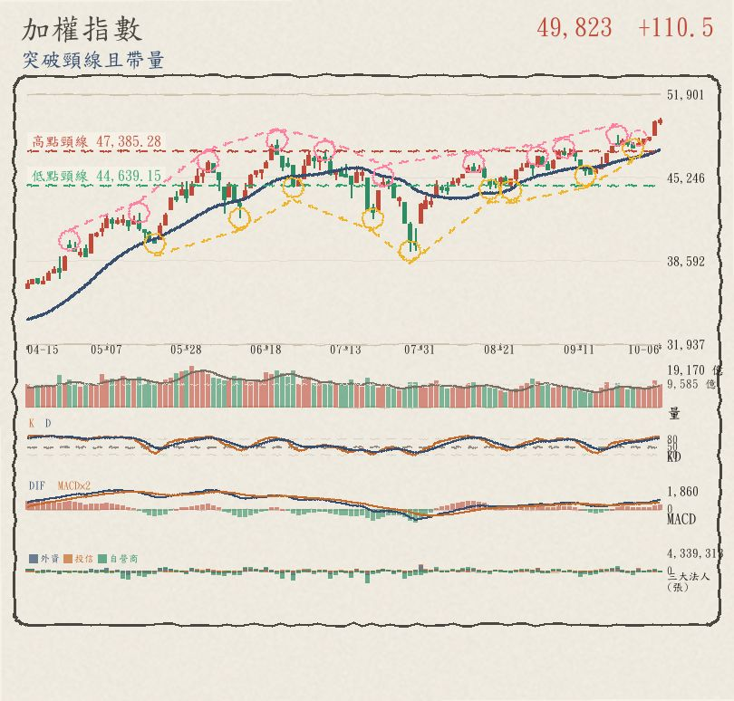
圖說：加權指數日 K（與個股圖相同標記）：黃圈＝轉折低點、粉圈＝轉折高點、虛線小圈＝還沒確認的轉折、藍線＝月線 MA20、水平虛線＝高點／低點頸線。最後一根是資料日當天。
本區塊為公開資料的技術面觀察，不構成投資建議，
不報牌、不預測、不下買賣決策。成交金額為集中市場總成交金額（含 ETF／權證），
與頁首摘要的「上市個股成交金額」口徑不同。標籤是統計，不是評分、也不是推薦。
上市 vs 上櫃（同期快篩）
加權 +0.22% vs 櫃買 -0.37%（方向相反，大小型股背離） → 方向相反（大小型股背離）
（兩個市場分開寫，不合併成一個數字；櫃買為 TPEX 公開資料）
櫃買歷史：TPEX 逐日回補 130 根；來源：櫃買中心 www/zh-tw/indexInfo/sectinx（逐日，官方；OpenAPI tpex_index 只回當月）
（TPEX OpenAPI 只回當月，故逐日回補；歷史不足就不算該條均線並標「資料不足」，不用錯數字）
近 20 個交易日大盤狀態回溯（最新在上）（點開看逐日主狀態／量比／量價象限）
用同一支程式回算最近 20 個交易日（主狀態 S1~S8 與量比 20 皆為當日收盤當時的判定，
不是事後調整）；量比 20 未公布的日子寫「—」。
好條件最多的（前 10）
不好條件最多的（前 10）
好條件（8 項）：站上月線、月線向上、底底高、頭頭高、突破頸線、相對大盤強、攻擊量（量增＋上漲）、守住今日高檔（距今日高點 1% 內）。
不好條件（8 項）：跌破前低、今日下跌、相對大盤弱、在月線之下、量增下跌（出貨）、貼近今日低點（1% 內）、跌破昨日低點、月線下彎。
兩邊都是同一組日線資料＋盤中即時價算出來的「符合項目數」，只是把方向相反的條件分開數；
條件數不是評分或推薦，不構成投資建議。
逆勢上漲（加權下跌、個股上漲）（38 上市 25／上櫃 13）
盤中爆量（估量比 ≥ 1.5）（33 上市 22／上櫃 11）
今日疲弱（跌幅前 10）（10 上市 8／上櫃 2）
逐檔（70 檔，依盤中成交金額排序）
國巨* 2327 上市
652 +27.0（+4.32%）
高點墊高、底部不穩 盤中成交值 527.63 億・全榜第 1 名（上市第 1 名）・相對大盤 +4.34
好條件 5/8：站上月線、月線向上、頭頭高、相對大盤強、攻擊量（量增＋上漲）
不好條件 0/8：無
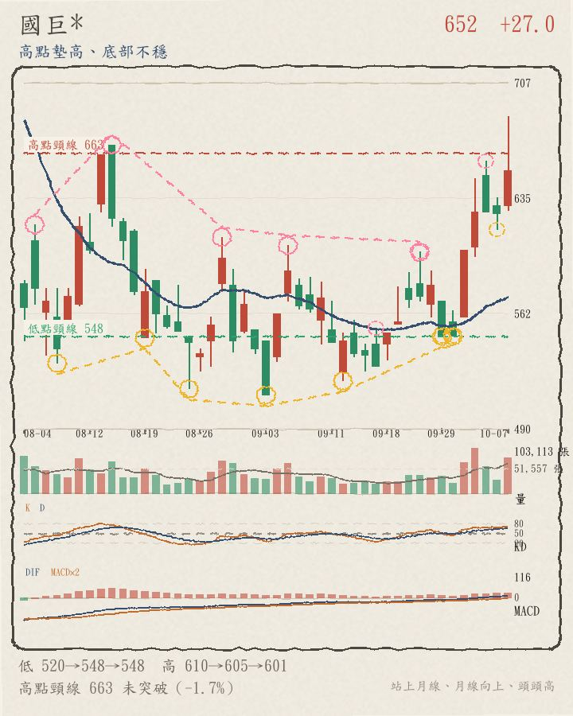
12:31 盤中 652（+4.32%），比加權指數強 4.34 個百分點、站上月線 569.5，離高點頸線 663 還差 1.7%，高點還在墊高（但底部沒同步墊高）。
- 月線位置：現價 652 在月線 569.5 之上（+14.5%）；5 日線 605.4 也在月線之上（短均在上）；月線向上
- 量能：以已過交易時間推估，今天成交量約是 20 日均量的 2.54 倍（爆量），比 20 日均量大不少；上漲又量增，量價配合
- 關鍵價位：高點頸線 663 還沒突破，差 1.7%；前一交易日高點 635（高於 2.7%）；今天盤中高點 686（低於 5.0%）；今天盤中低點 627（高於 4.0%）
- 轉折結構：高點 610、605、601 墊高（頭頭高），但低點 520、548、548 沒有同步墊高；還沒確認的轉折低點 09-30 548、10-06 615；還沒確認的轉折高點 09-23 601、10-05 658（圖上虛線小圈）
南亞 1303 上市
316.5 +23.5（+8.02%）
高點墊高、底部不穩 盤中成交值 339.38 億・全榜第 2 名（上市第 2 名）・相對大盤 +8.04
好條件 6/8：站上月線、月線向上、頭頭高、突破頸線、相對大盤強、攻擊量（量增＋上漲）
不好條件 0/8：無
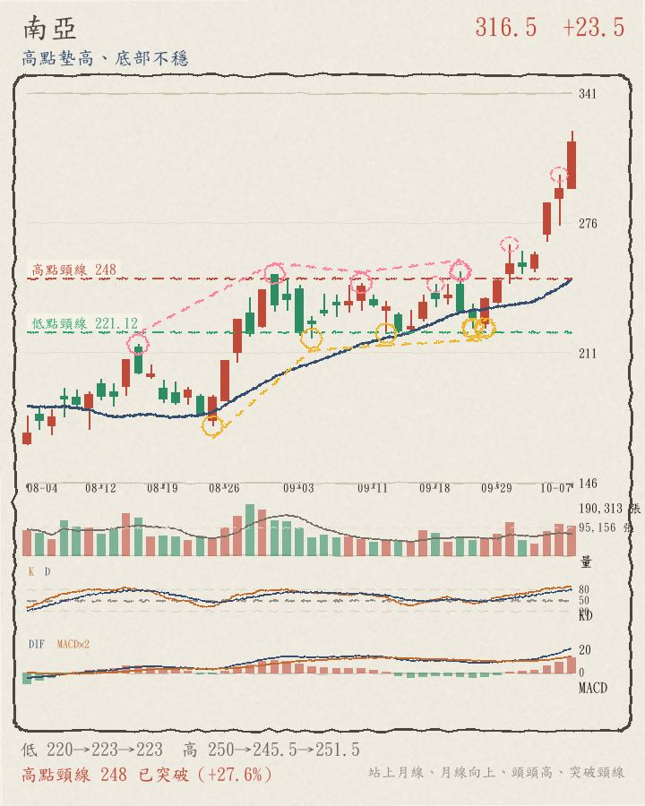
12:31 盤中 316.5（+8.02%），比加權指數強 8.04 個百分點、站上月線 243.3，已突破高點頸線 248，高點還在墊高（但底部沒同步墊高）。
- 月線位置：現價 316.5 在月線 243.3 之上（+30.1%）；5 日線 269.7 也在月線之上（短均在上）；月線向上
- 量能：以已過交易時間推估，今天成交量約是 20 日均量的 2.05 倍（爆量），比 20 日均量大不少；上漲又量增，量價配合
- 關鍵價位：高點頸線 248 已站上；前一交易日高點 300（高於 5.5%）；今天盤中高點 322（低於 1.7%）；今天盤中低點 293（高於 8.0%）
- 轉折結構：高點 250、245.5、251.5 墊高（頭頭高），但低點 220.5、223、223 沒有同步墊高；還沒確認的轉折低點 09-23 223、09-24 223；還沒確認的轉折高點 09-30 265、10-06 300（圖上虛線小圈）
台積電 2330 上市
2580 -5.0（-0.19%）
高點墊高、底部不穩 盤中成交值 263.62 億・全榜第 3 名（上市第 3 名）・相對大盤 -0.17
好條件 5/8：站上月線、月線向上、頭頭高、突破頸線、守住今日高檔（距今日高點 1% 內）
不好條件 3/8：今日下跌、相對大盤弱、貼近今日低點（1% 內）
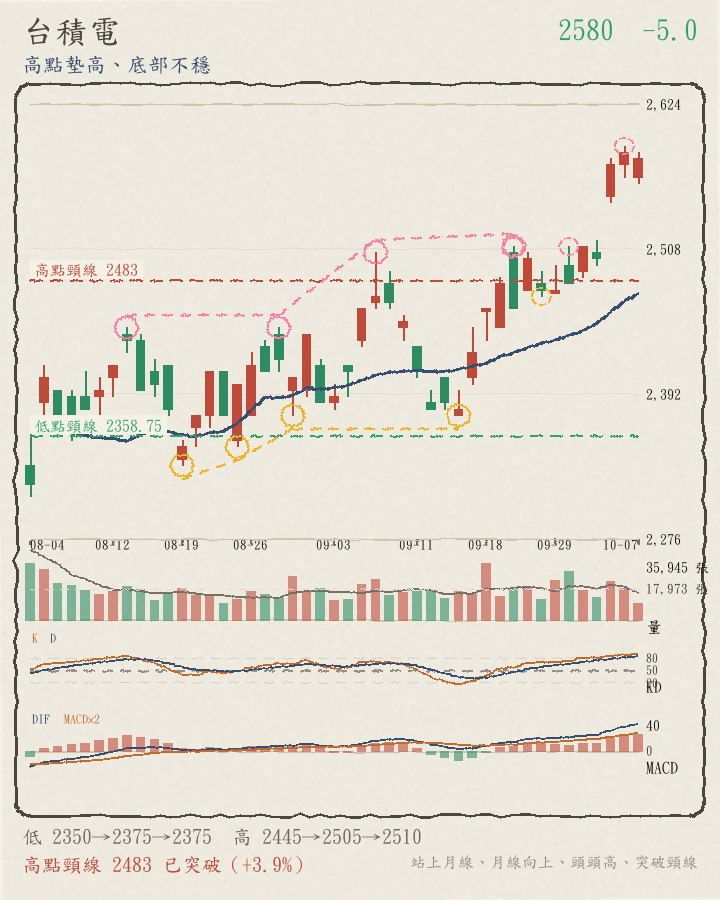
12:31 盤中 2580（-0.19%），比加權指數弱 0.17 個百分點、站上月線 2466.25，已突破高點頸線 2483，高點還在墊高（但底部沒同步墊高）。
- 月線位置：現價 2580 在月線 2466.25 之上（+4.6%）；5 日線 2530 也在月線之上（短均在上）；月線向上
- 量能：以已過交易時間推估，今天成交量約是 20 日均量的 0.66 倍（量縮），比 20 日均量少很多
- 關鍵價位：高點頸線 2483 已站上；前一交易日高點 2590（低於 0.4%）；今天盤中高點 2585（低於 0.2%）；今天盤中低點 2560（高於 0.8%）
- 轉折結構：高點 2445、2505、2510 墊高（頭頭高），但低點 2350、2375、2375 沒有同步墊高；還沒確認的轉折低點 09-24 2470；還沒確認的轉折高點 09-30 2510、10-06 2590（圖上虛線小圈）
華新科 2492 上市
428 +38.5（+9.88%）
上升趨勢（底底高＋頭頭高） 盤中成交值 221.31 億・全榜第 4 名（上市第 4 名）・相對大盤 +9.90
好條件 7/8：站上月線、月線向上、底底高、頭頭高、突破頸線、相對大盤強、攻擊量（量增＋上漲）
不好條件 0/8：無
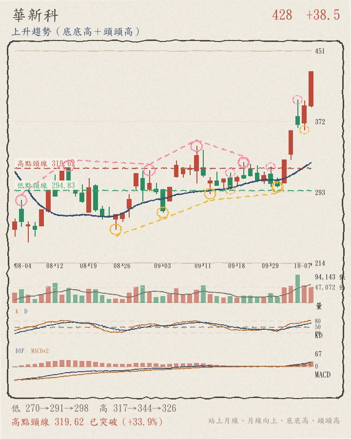
12:31 盤中 428（+9.88%），比加權指數強 9.90 個百分點、站上月線 320.65，已突破高點頸線 319.62，轉折結構仍是底底高＋頭頭高。
- 月線位置：現價 428 在月線 320.65 之上（+33.5%）；5 日線 349.6 也在月線之上（短均在上）；月線向上
- 量能：以已過交易時間推估，今天成交量約是 20 日均量的 2.04 倍（爆量），比 20 日均量大不少；上漲又量增，量價配合
- 關鍵價位：高點頸線 319.62 已站上；前一交易日高點 395（高於 8.4%）；今天盤中高點 428（高於 0.0%）；今天盤中低點 388（高於 10.3%）
- 轉折結構：低點 270、291、298.5 一路墊高、高點 317、344、326 也一路墊高，是底底高＋頭頭高；還沒確認的轉折低點 09-30 298.5、10-06 362.5；還沒確認的轉折高點 09-29 321、10-05 396（圖上虛線小圈）
聯發科 2454 上市
4860 -60.0（-1.22%）
上升趨勢（底底高＋頭頭高） 盤中成交值 192.94 億・全榜第 5 名（上市第 5 名）・相對大盤 -1.20
好條件 4/8：站上月線、月線向上、底底高、頭頭高
不好條件 5/8：跌破前低、今日下跌、相對大盤弱、貼近今日低點（1% 內）、跌破昨日低點
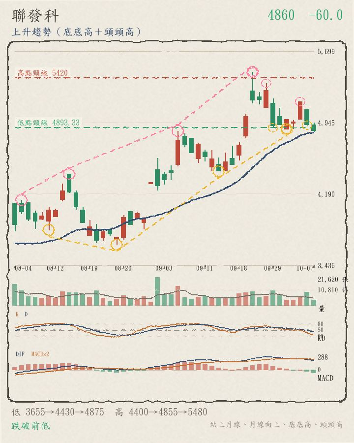
12:31 盤中 4860（-1.22%），比加權指數弱 1.20 個百分點、站上月線 4831.75，離高點頸線 5420 還差 10.3%，轉折結構仍是底底高＋頭頭高。
- 月線位置：現價 4860 在月線 4831.75 之上（+0.6%）；5 日線 4987 也在月線之上（短均在上）；月線向上
- 量能：以已過交易時間推估，今天成交量約是 20 日均量的 0.70 倍（量縮），比 20 日均量少很多
- 關鍵價位：已跌破前一個轉折低點；高點頸線 5420 還在現價上方 10.3%；前一交易日高點 5085（低於 4.4%）；今天盤中高點 4940（低於 1.6%）；今天盤中低點 4850（高於 0.2%）
- 轉折結構：低點 3655、4430、4875 一路墊高、高點 4400、4855、5480 也一路墊高，是底底高＋頭頭高；還沒確認的轉折低點 10-01 4875、10-06 4915；還沒確認的轉折高點 09-24 5360、10-05 5165（圖上虛線小圈）
聯電 2303 上市
148 +0.5（+0.34%）
上升趨勢（底底高＋頭頭高） 盤中成交值 181.84 億・全榜第 6 名（上市第 6 名）・相對大盤 +0.36
好條件 4/8：月線向上、底底高、頭頭高、相對大盤強
不好條件 2/8：跌破前低、在月線之下
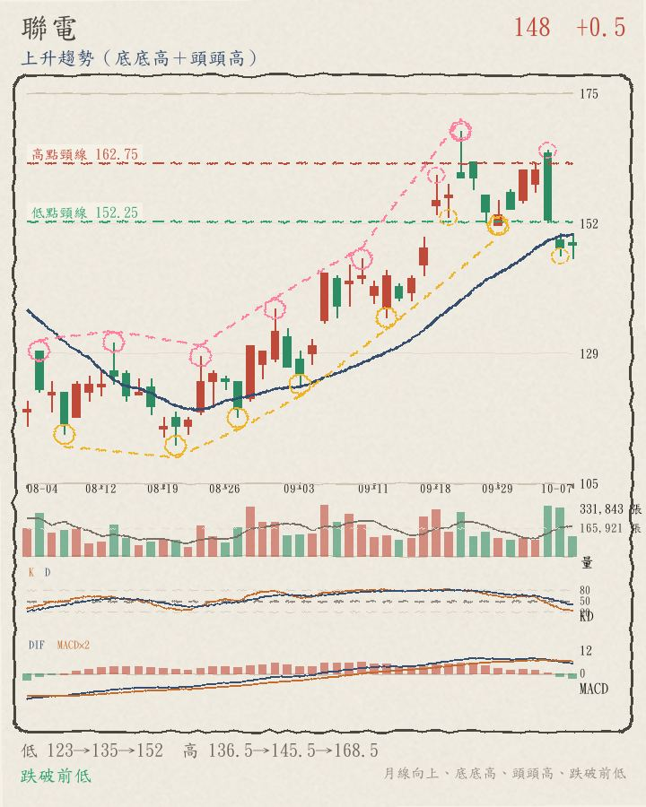
12:31 盤中 148（+0.34%），比加權指數強 0.36 個百分點、跌破月線 149.65，離高點頸線 162.75 還差 9.1%，轉折結構仍是底底高＋頭頭高。
- 月線位置：現價 148 在月線 149.65 之下（-1.1%）；5 日線 155.5 也在月線之上（短均在上）；月線向上
- 量能：以已過交易時間推估，今天成交量約是 20 日均量的 0.86 倍（量平），比 20 日均量少一些
- 關鍵價位：已跌破前一個轉折低點；高點頸線 162.75 還在現價上方 9.1%；前一交易日高點 150（低於 1.3%）；今天盤中高點 150（低於 1.3%）；今天盤中低點 145.5（高於 1.7%）
- 轉折結構：低點 123、135、151.5 一路墊高、高點 136.5、145.5、168.5 也一路墊高，是底底高＋頭頭高；還沒確認的轉折低點 09-29 151.5、10-06 146；還沒確認的轉折高點 09-22 168.5、10-05 165（圖上虛線小圈）
台燿 6274 上櫃
1735 -20.0（-1.14%）
高點墊高、底部不穩 盤中成交值 169.25 億・全榜第 7 名（上櫃第 1 名）・相對大盤 -1.12
好條件 4/8：站上月線、月線向上、頭頭高、突破頸線
不好條件 3/8：今日下跌、相對大盤弱、量增下跌（出貨）
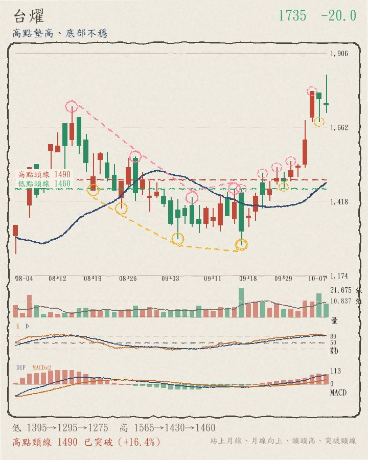
12:31 盤中 1735（-1.14%），比加權指數弱 1.12 個百分點、站上月線 1461.5，已突破高點頸線 1490，高點還在墊高（但底部沒同步墊高）。
- 月線位置：現價 1735 在月線 1461.5 之上（+18.7%）；5 日線 1642 也在月線之上（短均在上）；月線向上
- 量能：以已過交易時間推估，今天成交量約是 20 日均量的 1.53 倍（爆量），比 20 日均量大不少；下跌卻量增，量價背離
- 關鍵價位：高點頸線 1490 已站上；前一交易日高點 1775（低於 2.3%）；今天盤中高點 1835（低於 5.4%）；今天盤中低點 1710（高於 1.5%）
- 轉折結構：高點 1565、1430、1460 墊高（頭頭高），但低點 1395、1295、1275 沒有同步墊高；還沒確認的轉折低點 09-29 1465、10-06 1680；還沒確認的轉折高點 09-30 1550、10-05 1780（圖上虛線小圈）
頎邦 6147 上櫃
233 +16.5（+7.62%）
底部墊高、未過前高 盤中成交值 167.79 億・全榜第 8 名（上櫃第 2 名）・相對大盤 +7.64
好條件 6/8：站上月線、月線向上、底底高、突破頸線、相對大盤強、攻擊量（量增＋上漲）
不好條件 0/8：無
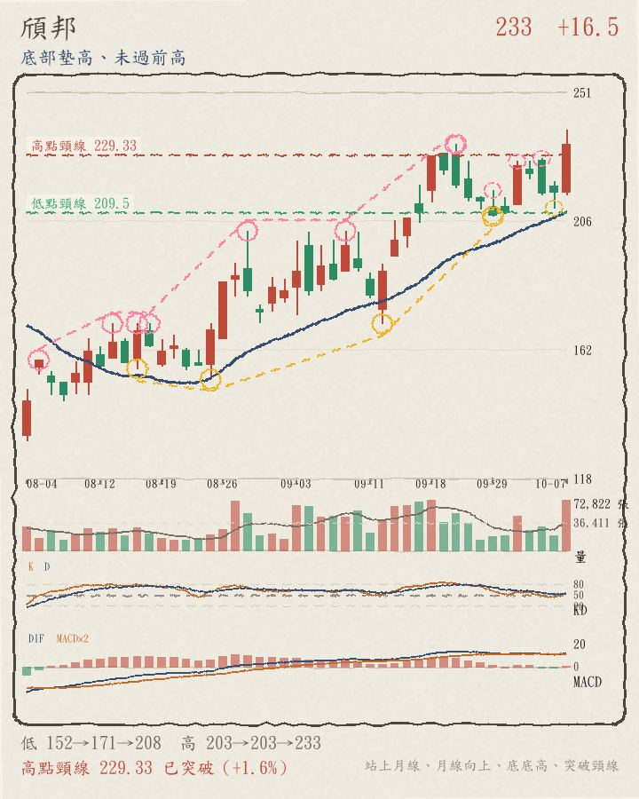
12:31 盤中 233（+7.62%），比加權指數強 7.64 個百分點、站上月線 207.6，已突破高點頸線 229.33，底部還在墊高（但高點沒同步創高）。
- 月線位置：現價 233 在月線 207.6 之上（+12.2%）；5 日線 218.1 也在月線之上（短均在上）；月線向上
- 量能：以已過交易時間推估，今天成交量約是 20 日均量的 2.04 倍（爆量），比 20 日均量大不少；上漲又量增，量價配合
- 關鍵價位：高點頸線 229.33 已站上；前一交易日高點 220（高於 5.9%）；今天盤中高點 238（低於 2.1%）；今天盤中低點 215.5（高於 8.1%）
- 轉折結構：低點 152、171、208 墊高（底底高），但高點 203、203、233 沒有同步創高；還沒確認的轉折低點 09-29 208、10-06 211；還沒確認的轉折高點 10-01 227、10-05 228（圖上虛線小圈）
臻鼎-KY 4958 上市
589 +15.0（+2.61%）
上升趨勢（底底高＋頭頭高） 盤中成交值 155.93 億・全榜第 9 名（上市第 7 名）・相對大盤 +2.63
好條件 7/8：站上月線、月線向上、底底高、頭頭高、突破頸線、相對大盤強、攻擊量（量增＋上漲）
不好條件 0/8：無
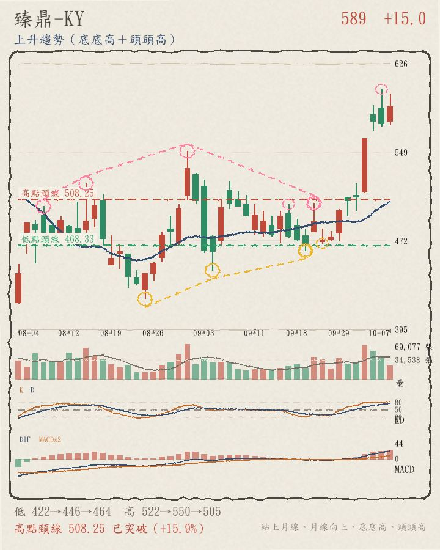
12:31 盤中 589（+2.61%），比加權指數強 2.63 個百分點、站上月線 502.05，已突破高點頸線 508.25，轉折結構仍是底底高＋頭頭高。
- 月線位置：現價 589 在月線 502.05 之上（+17.3%）；5 日線 545.6 也在月線之上（短均在上）；月線向上
- 量能：以已過交易時間推估，今天成交量約是 20 日均量的 1.11 倍（量增），比 20 日均量大一些；上漲又量增，量價配合
- 關鍵價位：高點頸線 508.25 已站上；前一交易日高點 604（低於 2.5%）；今天盤中高點 600（低於 1.8%）；今天盤中低點 573（高於 2.8%）
- 轉折結構：低點 421.5、446.5、463.5 一路墊高、高點 522、550、505 也一路墊高，是底底高＋頭頭高；還沒確認的轉折低點 09-21 463.5、09-23 470；還沒確認的轉折高點 09-22 505、10-06 604（圖上虛線小圈）
聯亞 3081 上櫃
3170 +250.0（+8.56%）
高點墊高、底部不穩 盤中成交值 154.22 億・全榜第 10 名（上櫃第 3 名）・相對大盤 +8.58
好條件 5/8：站上月線、頭頭高、突破頸線、相對大盤強、攻擊量（量增＋上漲）
不好條件 1/8：月線下彎
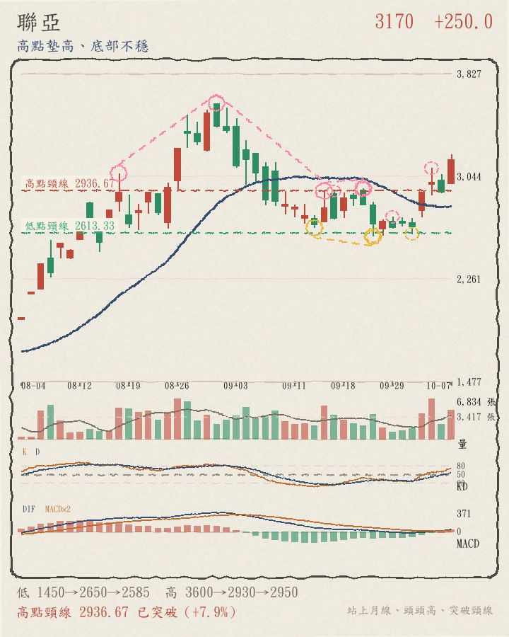
12:31 盤中 3170（+8.56%），比加權指數強 8.58 個百分點、站上月線 2809，已突破高點頸線 2936.67，高點還在墊高（但底部沒同步墊高）。
- 月線位置：現價 3170 在月線 2809 之上（+12.8%）；5 日線 2840 也在月線之上（短均在上）；月線向下
- 量能：以已過交易時間推估，今天成交量約是 20 日均量的 1.87 倍（爆量），比 20 日均量大不少；上漲又量增，量價配合
- 關鍵價位：高點頸線 2936.67 已站上；前一交易日高點 3055（高於 3.8%）；今天盤中高點 3210（低於 1.2%）；今天盤中低點 2990（高於 6.0%）
- 轉折結構：高點 3600、2930、2950 墊高（頭頭高），但低點 1450、2650、2585 沒有同步墊高；還沒確認的轉折低點 09-23 2585、10-01 2605；還沒確認的轉折高點 09-29 2735、10-05 3105（圖上虛線小圈）
南亞科 2408 上市
517 -8.0（-1.52%）
高點墊高、底部不穩 盤中成交值 145.99 億・全榜第 11 名（上市第 8 名）・相對大盤 -1.50
好條件 3/8：站上月線、月線向上、頭頭高
不好條件 4/8：今日下跌、相對大盤弱、貼近今日低點（1% 內）、跌破昨日低點
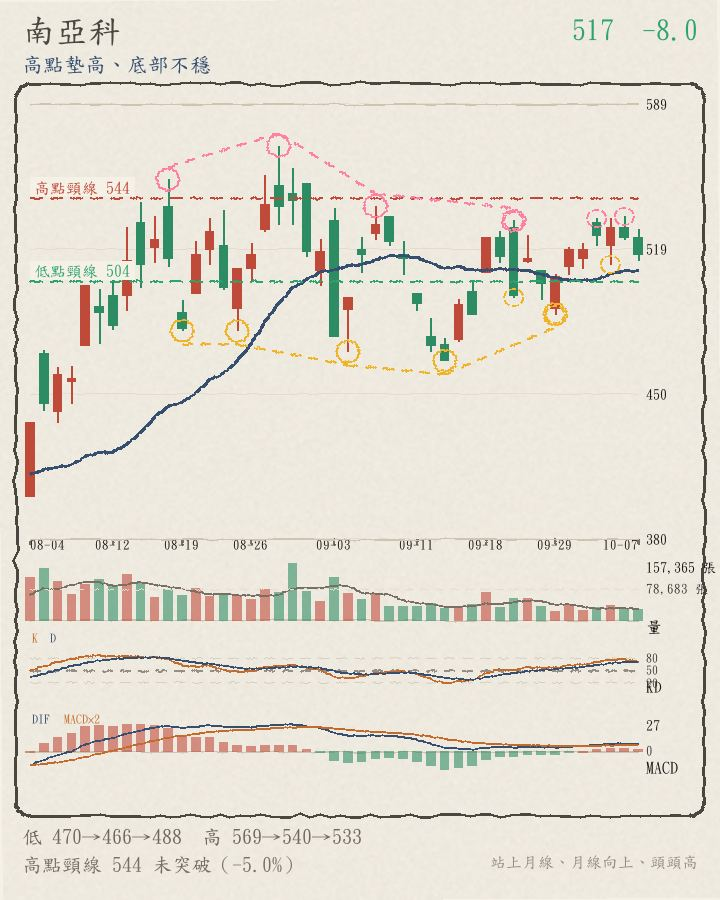
12:31 盤中 517（-1.52%），比加權指數弱 1.50 個百分點、站上月線 508.95，離高點頸線 544 還差 5.0%，高點還在墊高（但底部沒同步墊高）。
- 月線位置：現價 517 在月線 508.95 之上（+1.6%）；5 日線 523.8 也在月線之上（短均在上）；月線向上
- 量能：以已過交易時間推估，今天成交量約是 20 日均量的 0.80 倍（量平），比 20 日均量少很多
- 關鍵價位：高點頸線 544 還沒突破，差 5.0%；前一交易日高點 535（低於 3.4%）；今天盤中高點 529（低於 2.3%）；今天盤中低點 514（高於 0.6%）
- 轉折結構：高點 569、540、533 墊高（頭頭高），但低點 470、465.5、488 沒有同步墊高；還沒確認的轉折低點 09-29 488、10-05 512；還沒確認的轉折高點 10-02 534、10-06 535（圖上虛線小圈）
台達電 2308 上市
2005 -45.0（-2.20%）
高點墊高、底部不穩 盤中成交值 141.55 億・全榜第 12 名（上市第 9 名）・相對大盤 -2.18
好條件 4/8：站上月線、月線向上、頭頭高、突破頸線
不好條件 3/8：今日下跌、相對大盤弱、跌破昨日低點
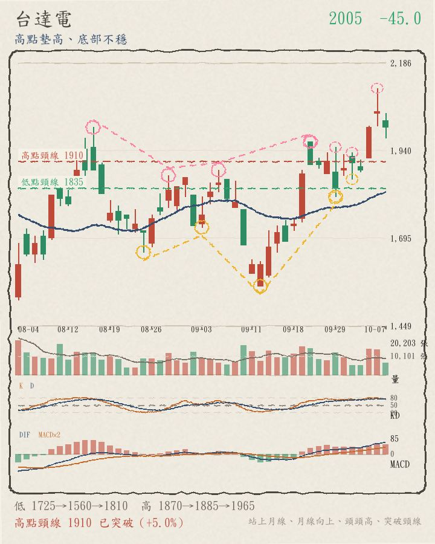
12:31 盤中 2005（-2.20%），比加權指數弱 2.18 個百分點、站上月線 1816，已突破高點頸線 1910，高點還在墊高（但底部沒同步墊高）。
- 月線位置：現價 2005 在月線 1816 之上（+10.4%）；5 日線 1947 也在月線之上（短均在上）；月線向上
- 量能：以已過交易時間推估，今天成交量約是 20 日均量的 0.85 倍（量平），比 20 日均量少一些
- 關鍵價位：高點頸線 1910 已站上；前一交易日高點 2115（低於 5.2%）；今天盤中高點 2045（低於 2.0%）；今天盤中低點 1975（高於 1.5%）
- 轉折結構：高點 1870、1885、1965 墊高（頭頭高），但低點 1725、1560、1810 沒有同步墊高；還沒確認的轉折低點 09-29 1810、10-01 1860；還沒確認的轉折高點 10-01 1935、10-06 2115（圖上虛線小圈）
台光電 2383 上市
6005 +10.0（+0.17%）
高點墊高、底部不穩 盤中成交值 133.01 億・全榜第 13 名（上市第 10 名）・相對大盤 +0.19
好條件 4/8：站上月線、頭頭高、相對大盤強、攻擊量（量增＋上漲）
不好條件 2/8：貼近今日低點（1% 內）、月線下彎
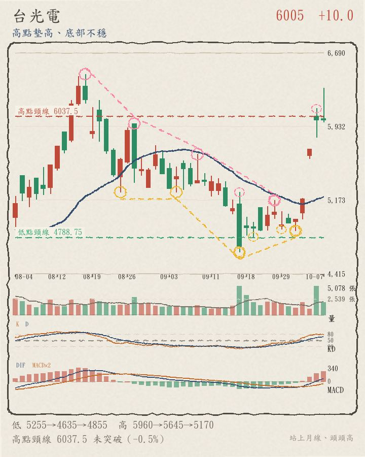
12:31 盤中 6005（+0.17%），比加權指數強 0.19 個百分點、站上月線 5180.75，離高點頸線 6037.5 還差 0.5%，高點還在墊高（但底部沒同步墊高）。
- 月線位置：現價 6005 在月線 5180.75 之上（+15.9%）；5 日線 5358 也在月線之上（短均在上）；月線向下
- 量能：以已過交易時間推估，今天成交量約是 20 日均量的 1.54 倍（爆量），比 20 日均量大不少；上漲又量增，量價配合
- 關鍵價位：高點頸線 6037.5 還沒突破，差 0.5%；前一交易日高點 6115（低於 1.8%）；今天盤中高點 6325（低於 5.1%）；今天盤中低點 5975（高於 0.5%）
- 轉折結構：高點 5960、5645、5170 墊高（頭頭高），但低點 5255、4635、4855 沒有同步墊高；還沒確認的轉折低點 09-29 4870、10-01 4855；還沒確認的轉折高點 09-24 5170、10-06 6115（圖上虛線小圈）
環球晶 6488 上櫃
1220 +15.0（+1.24%）
高點墊高、底部不穩 盤中成交值 130.27 億・全榜第 14 名（上櫃第 4 名）・相對大盤 +1.26
好條件 6/8：站上月線、月線向上、頭頭高、突破頸線、相對大盤強、攻擊量（量增＋上漲）
不好條件 0/8：無
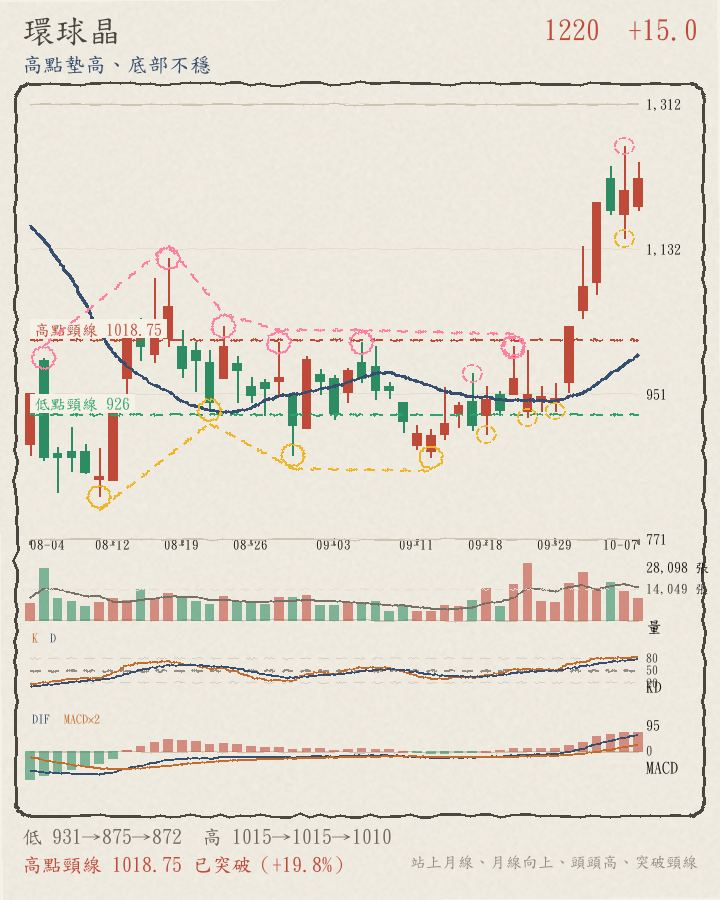
12:31 盤中 1220（+1.24%），比加權指數強 1.26 個百分點、站上月線 987.35，已突破高點頸線 1018.75，高點還在墊高（但底部沒同步墊高）。
- 月線位置：現價 1220 在月線 987.35 之上（+23.6%）；5 日線 1139 也在月線之上（短均在上）；月線向上
- 量能：以已過交易時間推估，今天成交量約是 20 日均量的 1.18 倍（量增），比 20 日均量大不少；上漲又量增，量價配合
- 關鍵價位：高點頸線 1018.75 已站上；前一交易日高點 1260（低於 3.2%）；今天盤中高點 1240（低於 1.6%）；今天盤中低點 1180（高於 3.4%）
- 轉折結構：高點 1015、1015、1010 墊高（頭頭高），但低點 931、875、872 沒有同步墊高；還沒確認的轉折低點 09-29 930、10-06 1145；還沒確認的轉折高點 09-22 1010、10-06 1260（圖上虛線小圈）
華通 2313 上市
247 -5.0（-1.98%）
上升趨勢（底底高＋頭頭高） 盤中成交值 124.47 億・全榜第 15 名（上市第 11 名）・相對大盤 -1.96
好條件 3/8：站上月線、底底高、頭頭高
不好條件 5/8：今日下跌、相對大盤弱、量增下跌（出貨）、貼近今日低點（1% 內）、月線下彎
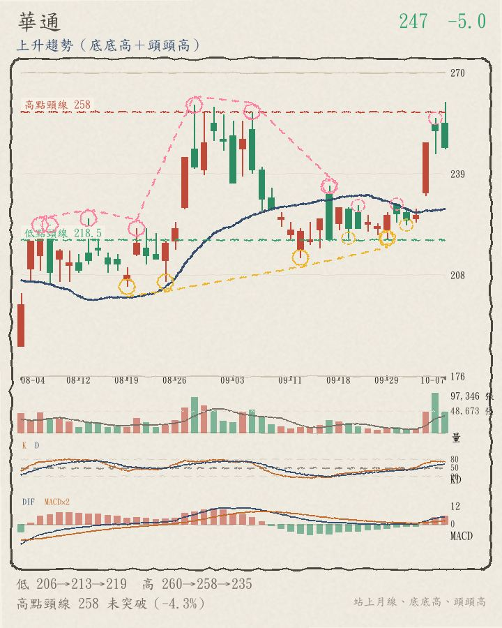
12:31 盤中 247（-1.98%），比加權指數弱 1.96 個百分點、站上月線 227.575，離高點頸線 258 還差 4.3%，轉折結構仍是底底高＋頭頭高。
- 月線位置：現價 247 在月線 227.575 之上（+8.5%）；5 日線 235.5 也在月線之上（短均在上）；月線向下
- 量能：以已過交易時間推估，今天成交量約是 20 日均量的 3.01 倍（爆量），比 20 日均量大不少；下跌卻量增，量價背離
- 關鍵價位：高點頸線 258 還沒突破，差 4.3%；前一交易日高點 256（低於 3.5%）；今天盤中高點 261（低於 5.4%）；今天盤中低點 246.5（高於 0.2%）
- 轉折結構：低點 205.5、213、219 一路墊高、高點 260、258、235 也一路墊高，是底底高＋頭頭高；還沒確認的轉折低點 09-29 219、10-01 223；還沒確認的轉折高點 09-30 229.5、10-06 256（圖上虛線小圈）
景碩 3189 上市
1105 +35.0（+3.27%）
高點墊高、底部不穩 盤中成交值 122.71 億・全榜第 16 名（上市第 12 名）・相對大盤 +3.29
好條件 5/8：站上月線、月線向上、頭頭高、突破頸線、相對大盤強
不好條件 0/8：無
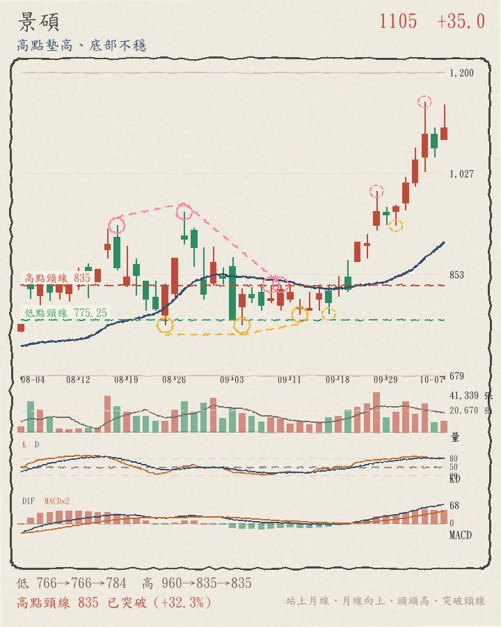
12:31 盤中 1105（+3.27%），比加權指數強 3.29 個百分點、站上月線 893.9，已突破高點頸線 835，高點還在墊高（但底部沒同步墊高）。
- 月線位置：現價 1105 在月線 893.9 之上（+23.6%）；5 日線 1039 也在月線之上（短均在上）；月線向上
- 量能：以已過交易時間推估，今天成交量約是 20 日均量的 0.75 倍（量平），比 20 日均量少很多；上漲但量縮，量價背離
- 關鍵價位：高點頸線 835 已站上；前一交易日高點 1105（高於 0.0%）；今天盤中高點 1145（低於 3.5%）；今天盤中低點 1085（高於 1.8%）
- 轉折結構：高點 960、835、835 墊高（頭頭高），但低點 766、766、784 沒有同步墊高；還沒確認的轉折低點 09-17 785、09-30 937；還沒確認的轉折高點 09-24 996、10-05 1150（圖上虛線小圈）
富喬 1815 上櫃
135 +8.0（+6.30%）
上升趨勢（底底高＋頭頭高） 盤中成交值 122.41 億・全榜第 17 名（上櫃第 5 名）・相對大盤 +6.32
好條件 7/8：站上月線、月線向上、底底高、頭頭高、突破頸線、相對大盤強、攻擊量（量增＋上漲）
不好條件 0/8：無
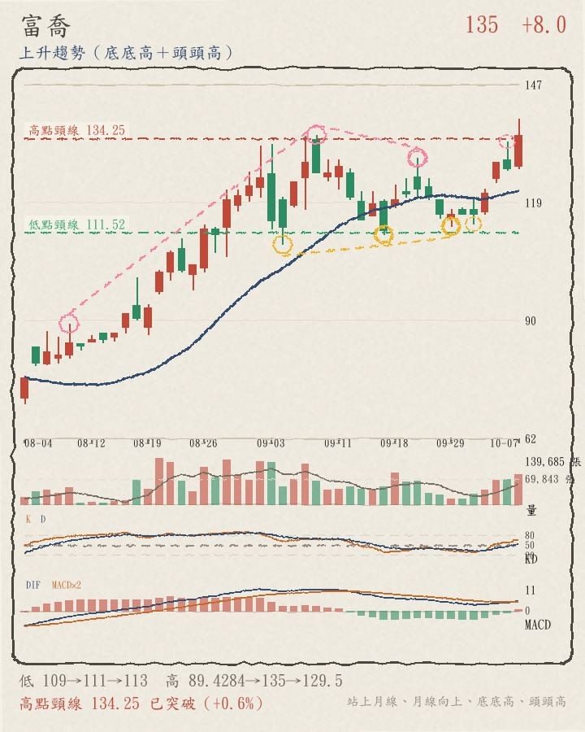
12:31 盤中 135（+6.30%），比加權指數強 6.32 個百分點、站上月線 120.994，已突破高點頸線 134.25，轉折結構仍是底底高＋頭頭高。
- 月線位置：現價 135 在月線 120.994 之上（+11.6%）；5 日線 121.7 也在月線之上（短均在上）；月線向上
- 量能：以已過交易時間推估，今天成交量約是 20 日均量的 2.16 倍（爆量），比 20 日均量大不少；上漲又量增，量價配合
- 關鍵價位：高點頸線 134.25 已站上；前一交易日高點 133.5（高於 1.1%）；今天盤中高點 139（低於 2.9%）；今天盤中低點 127（高於 6.3%）
- 轉折結構：低點 108.571、111、113 一路墊高、高點 89.4284、135、129.5 也一路墊高，是底底高＋頭頭高；還沒確認的轉折低點 09-29 113、10-01 113.5；還沒確認的轉折高點 09-22 129.5、10-06 133.5（圖上虛線小圈）
大立光 3008 上市
6845 -10.0（-0.15%）
高點墊高、底部不穩 盤中成交值 115.95 億・全榜第 18 名（上市第 13 名）・相對大盤 -0.13
好條件 3/8：站上月線、頭頭高、突破頸線
不好條件 3/8：今日下跌、相對大盤弱、月線下彎
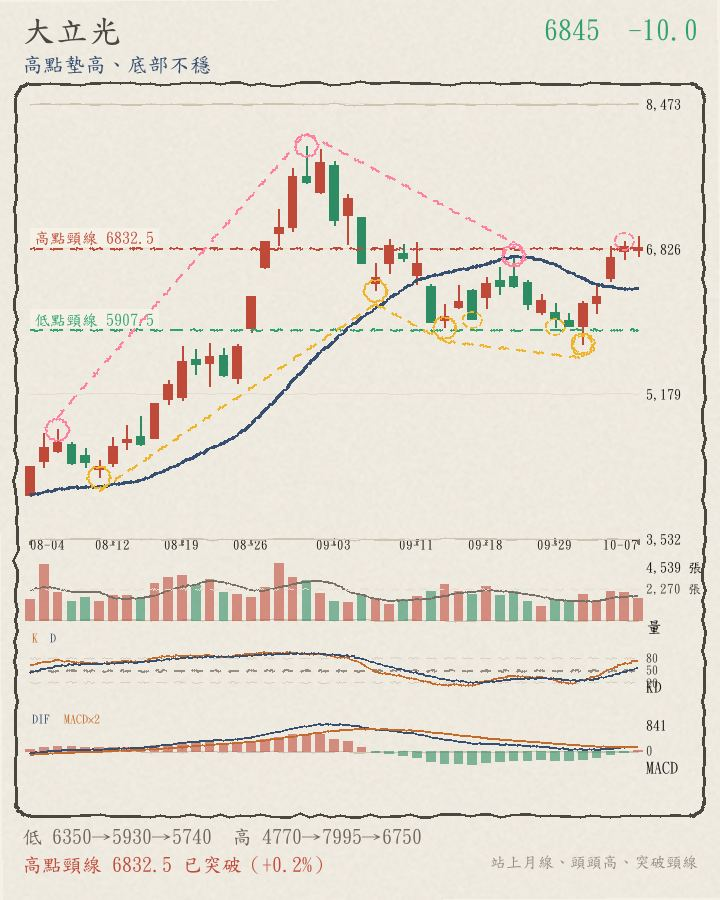
12:31 盤中 6845（-0.15%），比加權指數弱 0.13 個百分點、站上月線 6371，已突破高點頸線 6832.5，高點還在墊高（但底部沒同步墊高）。
- 月線位置：現價 6845 在月線 6371 之上（+7.4%）；5 日線 6405 也在月線之上（短均在上）；月線向下
- 量能：以已過交易時間推估，今天成交量約是 20 日均量的 1.15 倍（量增），比 20 日均量大不少；下跌卻量增，量價背離
- 關鍵價位：高點頸線 6832.5 已站上；前一交易日高點 6915（低於 1.0%）；今天盤中高點 6970（低於 1.8%）；今天盤中低點 6745（高於 1.5%）
- 轉折結構：高點 4770、7995、6750 墊高（頭頭高），但低點 6350、5930、5740 沒有同步墊高；還沒確認的轉折低點 09-29 5940、10-01 5740；還沒確認的轉折高點 09-22 6750、10-06 6915（圖上虛線小圈）
金像電 2368 上市
1255 -5.0（-0.40%）
高點墊高、底部不穩 盤中成交值 113.24 億・全榜第 19 名（上市第 14 名）・相對大盤 -0.38
好條件 4/8：站上月線、月線向上、頭頭高、突破頸線
不好條件 4/8：今日下跌、相對大盤弱、量增下跌（出貨）、貼近今日低點（1% 內）
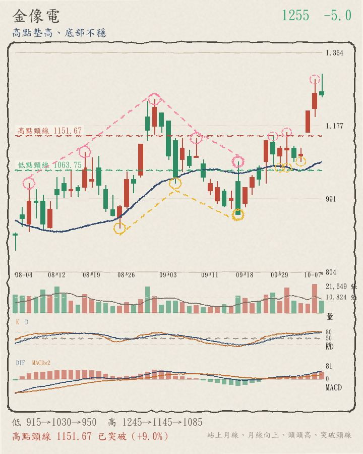
12:31 盤中 1255（-0.40%），比加權指數弱 0.38 個百分點、站上月線 1078.45，已突破高點頸線 1151.67，高點還在墊高（但底部沒同步墊高）。
- 月線位置：現價 1255 在月線 1078.45 之上（+16.4%）；5 日線 1159 也在月線之上（短均在上）；月線向上
- 量能：以已過交易時間推估，今天成交量約是 20 日均量的 1.37 倍（量增），比 20 日均量大不少；下跌卻量增，量價背離
- 關鍵價位：高點頸線 1151.67 已站上；前一交易日高點 1295（低於 3.1%）；今天盤中高點 1310（低於 4.2%）；今天盤中低點 1250（高於 0.4%）
- 轉折結構：高點 1245、1145、1085 墊高（頭頭高），但低點 915、1030、950 沒有同步墊高；還沒確認的轉折低點 09-30 1070、10-02 1085；還沒確認的轉折高點 09-30 1160、10-06 1295（圖上虛線小圈）
禾伸堂 3026 上市
835 +39.0（+4.90%）
上升趨勢（底底高＋頭頭高） 盤中成交值 113.15 億・全榜第 20 名（上市第 15 名）・相對大盤 +4.92
好條件 6/8：站上月線、月線向上、底底高、頭頭高、相對大盤強、攻擊量（量增＋上漲）
不好條件 0/8：無
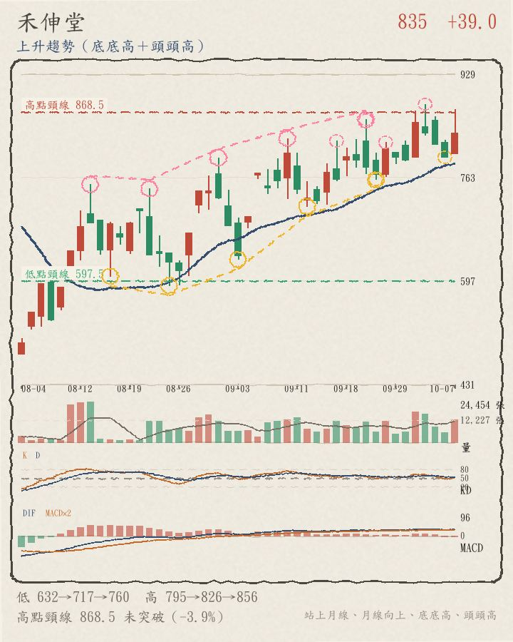
12:31 盤中 835（+4.90%），比加權指數強 4.92 個百分點、站上月線 782.25，離高點頸線 868.5 還差 3.9%，轉折結構仍是底底高＋頭頭高。
- 月線位置：現價 835 在月線 782.25 之上（+6.7%）；5 日線 818.2 也在月線之上（短均在上）；月線向上
- 量能：以已過交易時間推估，今天成交量約是 20 日均量的 1.71 倍（爆量），比 20 日均量大不少；上漲又量增，量價配合
- 關鍵價位：高點頸線 868.5 還沒突破，差 3.9%；前一交易日高點 823（高於 1.5%）；今天盤中高點 872（低於 4.2%）；今天盤中低點 801（高於 4.2%）
- 轉折結構：低點 632、717、760 一路墊高、高點 795、826、856 也一路墊高，是底底高＋頭頭高；還沒確認的轉折低點 09-23 760、10-06 796；還沒確認的轉折高點 09-24 820、10-02 881（圖上虛線小圈）
世芯-KY 3661 上市
4215 +35.0（+0.84%）
高點墊高、底部不穩 盤中成交值 112.2 億・全榜第 21 名（上市第 16 名）・相對大盤 +0.86
好條件 4/8：站上月線、頭頭高、相對大盤強、攻擊量（量增＋上漲）
不好條件 1/8：月線下彎
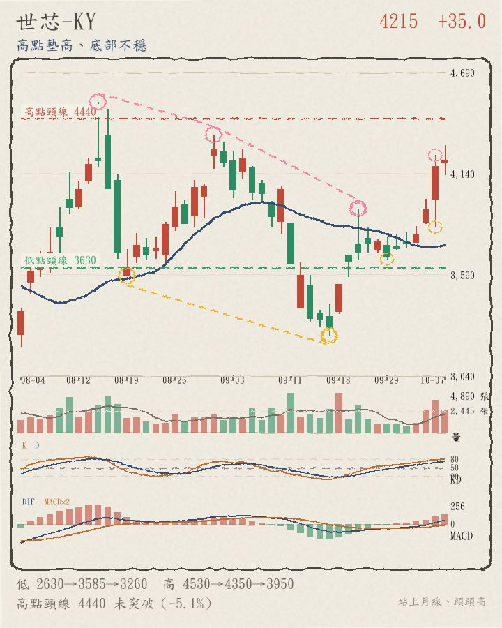
12:31 盤中 4215（+0.84%），比加權指數強 0.86 個百分點、站上月線 3742.25，離高點頸線 4440 還差 5.1%，高點還在墊高（但底部沒同步墊高）。
- 月線位置：現價 4215 在月線 3742.25 之上（+12.6%）；5 日線 3889 也在月線之上（短均在上）；月線向下
- 量能：以已過交易時間推估，今天成交量約是 20 日均量的 1.54 倍（爆量），比 20 日均量大不少；上漲又量增，量價配合
- 關鍵價位：高點頸線 4440 還沒突破，差 5.1%；前一交易日高點 4240（低於 0.6%）；今天盤中高點 4295（低於 1.9%）；今天盤中低點 4135（高於 1.9%）
- 轉折結構：高點 4530、4350、3950 墊高（頭頭高），但低點 2630、3585、3260 沒有同步墊高；還沒確認的轉折低點 09-29 3675、10-06 3850；還沒確認的轉折高點 09-22 3950、10-06 4240（圖上虛線小圈）
矽格 6257 上市
278 -8.0（-2.80%）
高點墊高、底部不穩 盤中成交值 110.87 億・全榜第 22 名（上市第 17 名）・相對大盤 -2.78
好條件 4/8：站上月線、月線向上、頭頭高、突破頸線
不好條件 3/8：今日下跌、相對大盤弱、量增下跌（出貨）
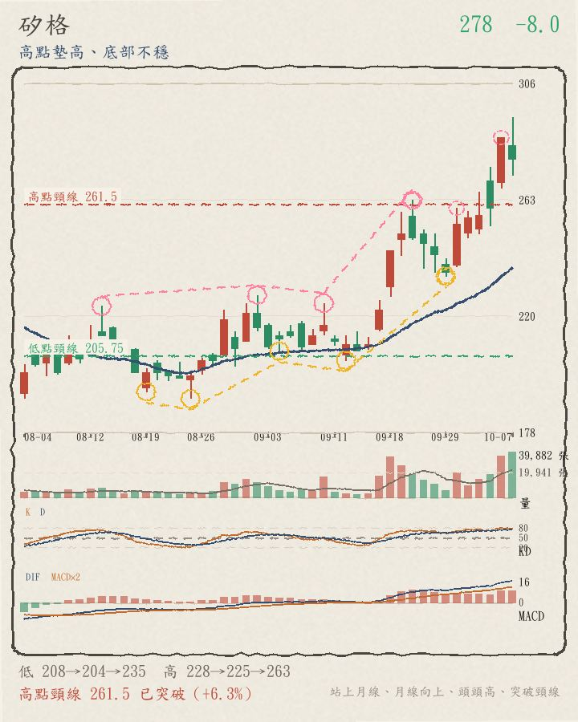
12:31 盤中 278（-2.80%），比加權指數弱 2.78 個百分點、站上月線 234.9，已突破高點頸線 261.5，高點還在墊高（但底部沒同步墊高）。
- 月線位置：現價 278 在月線 234.9 之上（+18.4%）；5 日線 262.8 也在月線之上（短均在上）；月線向上
- 量能：以已過交易時間推估，今天成交量約是 20 日均量的 3.99 倍（爆量），比 20 日均量大不少；下跌卻量增，量價背離
- 關鍵價位：高點頸線 261.5 已站上；前一交易日高點 286（低於 2.8%）；今天盤中高點 293.5（低於 5.3%）；今天盤中低點 272（高於 2.2%）
- 轉折結構：高點 228、225、263 墊高（頭頭高），但低點 207.5、204、235 沒有同步墊高；還沒確認的轉折低點 09-29 235；還沒確認的轉折高點 09-30 260、10-06 286（圖上虛線小圈）
創意 3443 上市
8510 +135.0（+1.61%）
上升趨勢（底底高＋頭頭高） 盤中成交值 105.61 億・全榜第 23 名（上市第 18 名）・相對大盤 +1.63
好條件 5/8：站上月線、月線向上、底底高、頭頭高、相對大盤強
不好條件 0/8：無
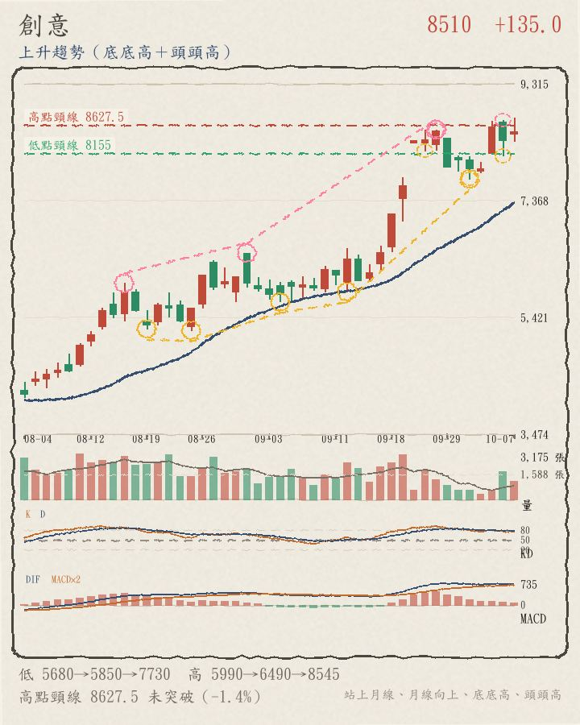
12:31 盤中 8510（+1.61%），比加權指數強 1.63 個百分點、站上月線 7203，離高點頸線 8627.5 還差 1.4%，轉折結構仍是底底高＋頭頭高。
- 月線位置：現價 8510 在月線 7203 之上（+18.1%）；5 日線 8163 也在月線之上（短均在上）；月線向上
- 量能：以已過交易時間推估，今天成交量約是 20 日均量的 1.05 倍（量平），比 20 日均量大一些
- 關鍵價位：高點頸線 8627.5 還沒突破，差 1.4%；前一交易日高點 8710（低於 2.3%）；今天盤中高點 8750（低於 2.7%）；今天盤中低點 8350（高於 1.9%）
- 轉折結構：低點 5680、5850、7730 一路墊高、高點 5990、6490、8545 也一路墊高，是底底高＋頭頭高；還沒確認的轉折低點 10-01 7730、10-06 8110；還沒確認的轉折高點 09-24 8545、10-06 8710（圖上虛線小圈）
穩懋 3105 上櫃
589 -3.0（-0.51%）
高點墊高、底部不穩 盤中成交值 105.5 億・全榜第 24 名（上櫃第 6 名）・相對大盤 -0.49
好條件 4/8：站上月線、月線向上、頭頭高、突破頸線
不好條件 2/8：今日下跌、相對大盤弱
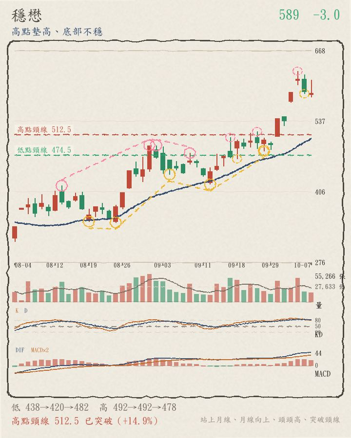
12:31 盤中 589（-0.51%），比加權指數弱 0.49 個百分點、站上月線 497.9，已突破高點頸線 512.5，高點還在墊高（但底部沒同步墊高）。
- 月線位置：現價 589 在月線 497.9 之上（+18.3%）；5 日線 575.6 也在月線之上（短均在上）；月線向上
- 量能：以已過交易時間推估，今天成交量約是 20 日均量的 0.82 倍（量平），比 20 日均量少很多
- 關鍵價位：高點頸線 512.5 已站上；前一交易日高點 623（低於 5.5%）；今天盤中高點 613（低於 3.9%）；今天盤中低點 582（高於 1.2%）
- 轉折結構：高點 492、492、478 墊高（頭頭高），但低點 438.5、420、482 沒有同步墊高；還沒確認的轉折低點 09-24 482、10-06 588；還沒確認的轉折高點 09-23 518、10-05 630（圖上虛線小圈）
聯茂 6213 上市
797 +10.0（+1.27%）
高點墊高、底部不穩 盤中成交值 102.73 億・全榜第 25 名（上市第 19 名）・相對大盤 +1.29
好條件 5/8：站上月線、月線向上、頭頭高、突破頸線、相對大盤強
不好條件 0/8：無
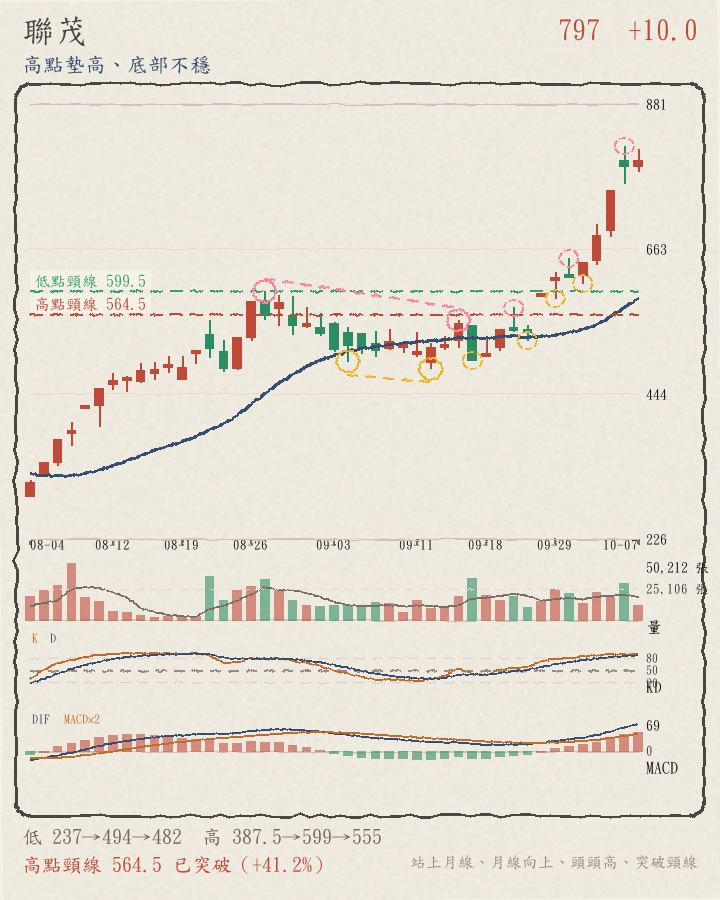
12:31 盤中 797（+1.27%），比加權指數強 1.29 個百分點、站上月線 574.25，已突破高點頸線 564.5，高點還在墊高（但底部沒同步墊高）。
- 月線位置：現價 797 在月線 574.25 之上（+38.8%）；5 日線 697.2 也在月線之上（短均在上）；月線向上
- 量能：以已過交易時間推估，今天成交量約是 20 日均量的 0.93 倍（量平），比 20 日均量少一些
- 關鍵價位：高點頸線 564.5 已站上；前一交易日高點 818（低於 2.6%）；今天盤中高點 813（低於 2.0%）；今天盤中低點 780（高於 2.2%）
- 轉折結構：高點 387.5、599、555 墊高（頭頭高），但低點 237、493.5、482 沒有同步墊高；還沒確認的轉折低點 09-29 588、10-01 611；還沒確認的轉折高點 09-30 649、10-06 818（圖上虛線小圈）
致茂 2360 上市
2400 +50.0（+2.13%）
高點墊高、底部不穩 盤中成交值 102 億・全榜第 26 名（上市第 20 名）・相對大盤 +2.15
好條件 5/8：站上月線、月線向上、頭頭高、相對大盤強、攻擊量（量增＋上漲）
不好條件 1/8：貼近今日低點（1% 內）
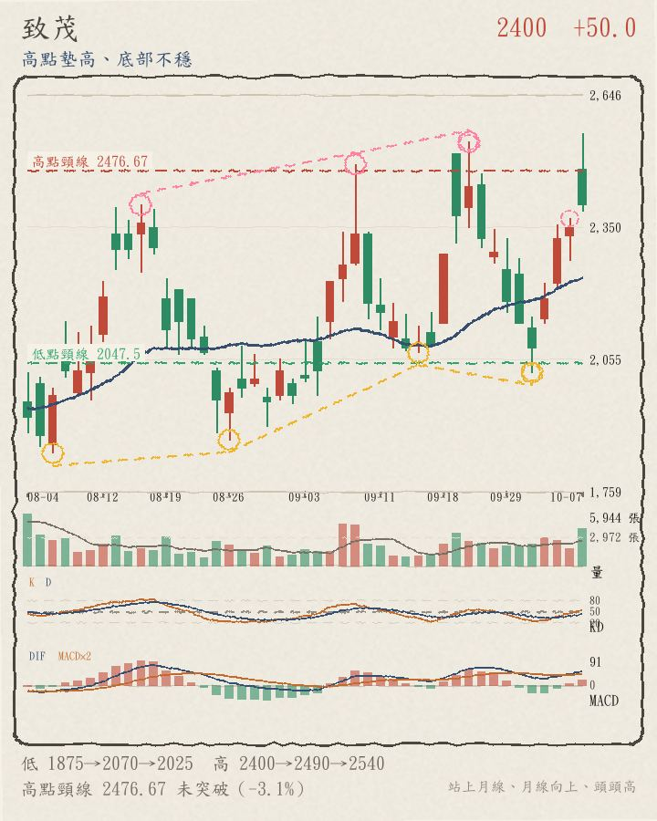
12:31 盤中 2400（+2.13%），比加權指數強 2.15 個百分點、站上月線 2227.75，離高點頸線 2476.67 還差 3.1%，高點還在墊高（但底部沒同步墊高）。
- 月線位置：現價 2400 在月線 2227.75 之上（+7.7%）；5 日線 2216 也在月線之下（短均在下）；月線向上
- 量能：以已過交易時間推估，今天成交量約是 20 日均量的 2.27 倍（爆量），比 20 日均量大不少；上漲又量增，量價配合
- 關鍵價位：高點頸線 2476.67 還沒突破，差 3.1%；前一交易日高點 2370（高於 1.3%）；今天盤中高點 2560（低於 6.2%）；今天盤中低點 2385（高於 0.6%）
- 轉折結構：高點 2400、2490、2540 墊高（頭頭高），但低點 1875、2070、2025 沒有同步墊高；還沒確認的轉折低點 10-01 2025；還沒確認的轉折高點 09-22 2540、10-06 2370（圖上虛線小圈）
南電 8046 上市
1485 -20.0（-1.33%）
上升趨勢（底底高＋頭頭高） 盤中成交值 98.99 億・全榜第 27 名（上市第 21 名）・相對大盤 -1.31
好條件 5/8：站上月線、月線向上、底底高、頭頭高、突破頸線
不好條件 2/8：今日下跌、相對大盤弱
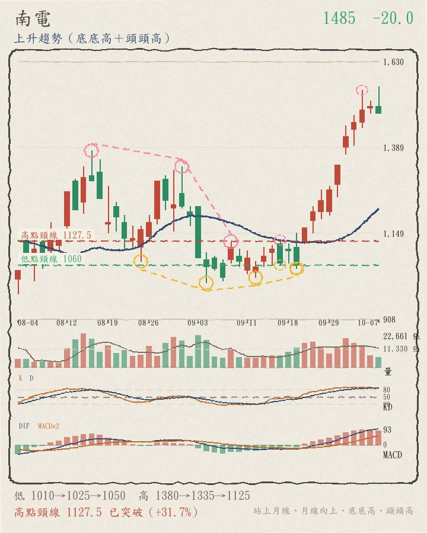
12:31 盤中 1485（-1.33%），比加權指數弱 1.31 個百分點、站上月線 1195.5，已突破高點頸線 1127.5，轉折結構仍是底底高＋頭頭高。
- 月線位置：現價 1485 在月線 1195.5 之上（+24.2%）；5 日線 1444 也在月線之上（短均在上）；月線向上
- 量能：以已過交易時間推估，今天成交量約是 20 日均量的 0.75 倍（量平），比 20 日均量少很多
- 關鍵價位：高點頸線 1127.5 已站上；前一交易日高點 1520（低於 2.3%）；今天盤中高點 1560（低於 4.8%）；今天盤中低點 1485（高於 0.0%）
- 轉折結構：低點 1010、1025、1050 一路墊高、高點 1380、1335、1125 也一路墊高，是底底高＋頭頭高；還沒確認的轉折低點 09-17 1060、09-21 1050；還沒確認的轉折高點 09-17 1130、10-05 1550（圖上虛線小圈）
金居 8358 上櫃
551 +0.0（+0.00%）
上升趨勢（底底高＋頭頭高） 盤中成交值 96.5 億・全榜第 28 名（上櫃第 7 名）・相對大盤 +0.02
好條件 5/8：站上月線、月線向上、底底高、頭頭高、相對大盤強
不好條件 0/8：無
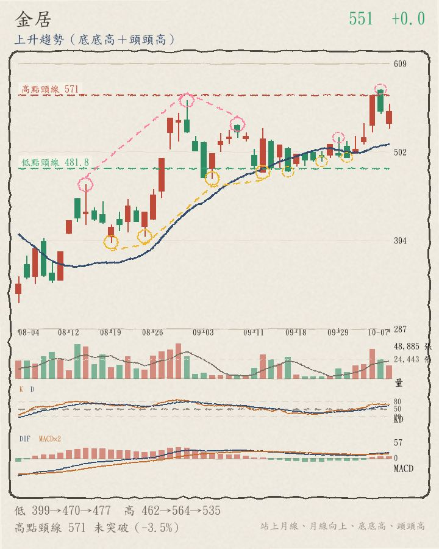
12:31 盤中 551（+0.00%），比加權指數強 0.02 個百分點、站上月線 509.2，離高點頸線 571 還差 3.5%，轉折結構仍是底底高＋頭頭高。
- 月線位置：現價 551 在月線 509.2 之上（+8.2%）；5 日線 528 也在月線之上（短均在上）；月線向上
- 量能：以已過交易時間推估，今天成交量約是 20 日均量的 1.77 倍（爆量），比 20 日均量大不少
- 關鍵價位：高點頸線 571 還沒突破，差 3.5%；前一交易日高點 578（低於 4.7%）；今天盤中高點 560（低於 1.6%）；今天盤中低點 530（高於 4.0%）
- 轉折結構：低點 399、469.5、477 一路墊高、高點 462、564、535 也一路墊高，是底底高＋頭頭高；還沒確認的轉折低點 09-23 490、09-30 495；還沒確認的轉折高點 09-29 519、10-06 578（圖上虛線小圈）
華邦電 2344 上市
179.5 +2.0（+1.13%）
高點墊高、底部不穩 盤中成交值 95.01 億・全榜第 29 名（上市第 22 名）・相對大盤 +1.15
好條件 4/8：站上月線、月線向上、頭頭高、相對大盤強
不好條件 0/8：無
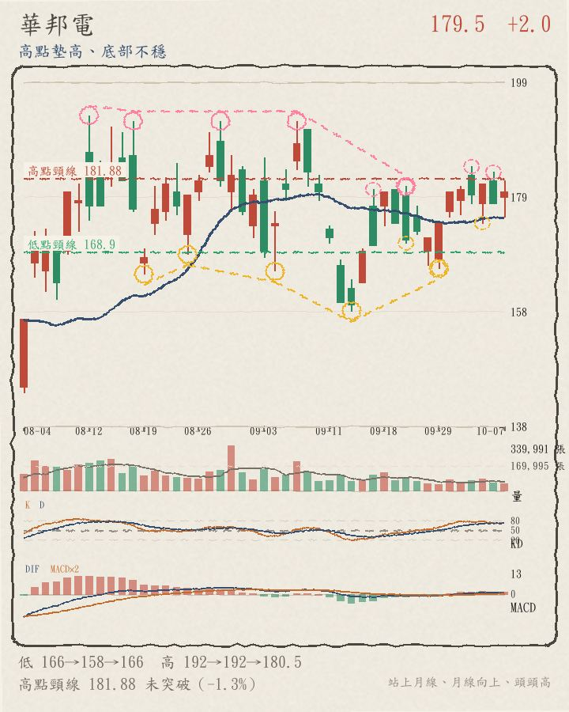
12:31 盤中 179.5（+1.13%），比加權指數強 1.15 個百分點、站上月線 175，離高點頸線 181.88 還差 1.3%，高點還在墊高（但底部沒同步墊高）。
- 月線位置：現價 179.5 在月線 175 之上（+2.6%）；5 日線 179.4 也在月線之上（短均在上）；月線向上
- 量能：以已過交易時間推估，今天成交量約是 20 日均量的 0.72 倍（量平），比 20 日均量少很多；上漲但量縮，量價背離
- 關鍵價位：高點頸線 181.88 還沒突破，差 1.3%；前一交易日高點 183（低於 1.9%）；今天盤中高點 181.5（低於 1.1%）；今天盤中低點 175（高於 2.6%）
- 轉折結構：高點 192、192、180.5 墊高（頭頭高），但低點 165.5、158.5、166 沒有同步墊高；還沒確認的轉折低點 09-29 166、10-05 174；還沒確認的轉折高點 10-02 184、10-06 183（圖上虛線小圈）
友達 2409 上市
37.4 -0.1（-0.13%）
高點墊高、底部不穩 盤中成交值 93.97 億・全榜第 30 名（上市第 23 名）・相對大盤 -0.11
好條件 4/8：站上月線、月線向上、頭頭高、突破頸線
不好條件 2/8：今日下跌、相對大盤弱
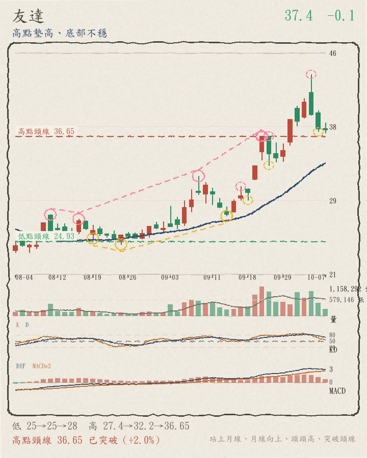
12:31 盤中 37.4（-0.13%），比加權指數弱 0.11 個百分點、站上月線 33.215，已突破高點頸線 36.65，高點還在墊高（但底部沒同步墊高）。
- 月線位置：現價 37.4 在月線 33.215 之上（+12.6%）；5 日線 38.76 也在月線之上（短均在上）；月線向上
- 量能：以已過交易時間推估，今天成交量約是 20 日均量的 0.56 倍（量縮），比 20 日均量少很多
- 關鍵價位：高點頸線 36.65 已站上；前一交易日高點 39.5（低於 5.3%）；今天盤中高點 38.15（低於 2.0%）；今天盤中低點 37（高於 1.1%）
- 轉折結構：高點 27.4、32.2、36.65 墊高（頭頭高），但低點 25.25、24.6、27.75 沒有同步墊高；還沒確認的轉折低點 09-23 33.4、10-06 37.15；還沒確認的轉折高點 09-23 36.65、10-05 43.55（圖上虛線小圈）
欣興 3037 上市
1305 -5.0（-0.38%）
高點墊高、底部不穩 盤中成交值 88.15 億・全榜第 31 名（上市第 24 名）・相對大盤 -0.36
好條件 4/8：站上月線、月線向上、頭頭高、突破頸線
不好條件 3/8：今日下跌、相對大盤弱、貼近今日低點（1% 內）
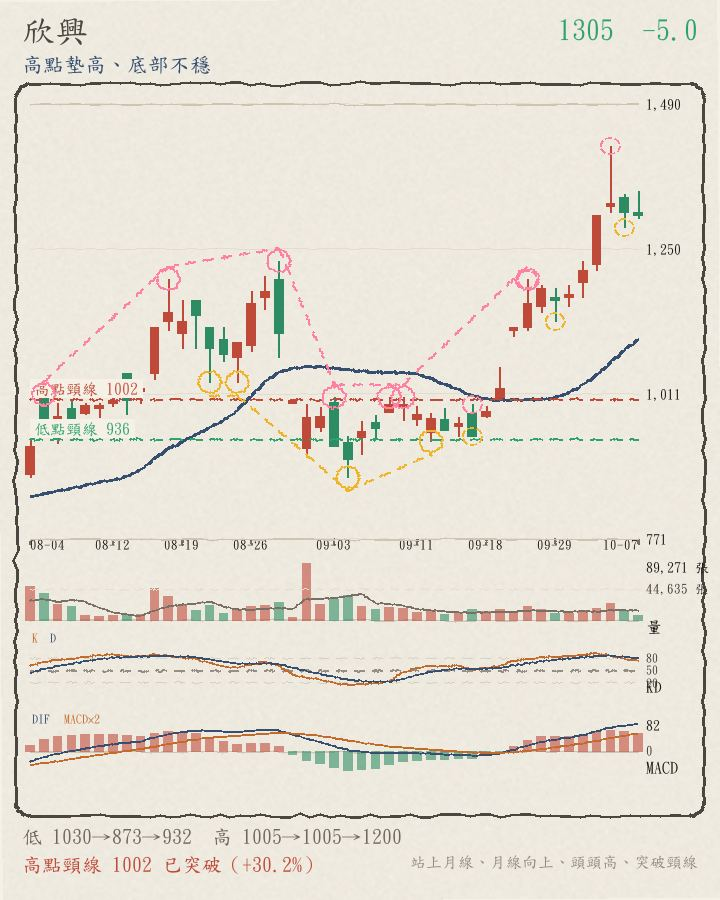
12:31 盤中 1305（-0.38%），比加權指數弱 0.36 個百分點、站上月線 1082.5，已突破高點頸線 1002，高點還在墊高（但底部沒同步墊高）。
- 月線位置：現價 1305 在月線 1082.5 之上（+20.6%）；5 日線 1266 也在月線之上（短均在上）；月線向上
- 量能：以已過交易時間推估，今天成交量約是 20 日均量的 0.52 倍（量縮），比 20 日均量少很多
- 關鍵價位：高點頸線 1002 已站上；前一交易日高點 1340（低於 2.6%）；今天盤中高點 1345（低於 3.0%）；今天盤中低點 1300（高於 0.4%）
- 轉折結構：高點 1005、1005、1200 墊高（頭頭高），但低點 1030、873、932 沒有同步墊高；還沒確認的轉折低點 09-29 1130、10-06 1285；還沒確認的轉折高點 09-23 1200、10-05 1420（圖上虛線小圈）
穎崴 6515 上市
5520 -610.0（-9.95%）
高點墊高、底部不穩 盤中成交值 85.89 億・全榜第 32 名（上市第 25 名）・相對大盤 -9.93
好條件 1/8：頭頭高
不好條件 7/8：跌破前低、今日下跌、相對大盤弱、在月線之下、量增下跌（出貨）、跌破昨日低點、月線下彎
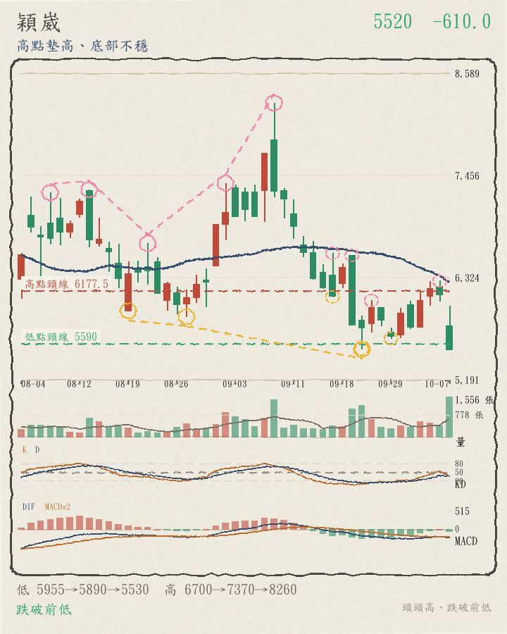
12:31 盤中 5520（-9.95%），比加權指數弱 9.93 個百分點、跌破月線 6346.25，離高點頸線 6177.5 還差 10.6%，高點還在墊高（但底部沒同步墊高）。
- 月線位置：現價 5520 在月線 6346.25 之下（-13.0%）；5 日線 6021 也在月線之下（短均在下）；月線向下
- 量能：以已過交易時間推估，今天成交量約是 20 日均量的 3.53 倍（爆量），比 20 日均量大不少；下跌卻量增，量價背離
- 關鍵價位：已跌破前一個轉折低點；高點頸線 6177.5 還在現價上方 10.6%；前一交易日高點 6285（低於 12.2%）；今天盤中高點 6010（低於 8.2%）；今天盤中低點 5520（高於 0.0%）
- 轉折結構：高點 6700、7370、8260 墊高（頭頭高），但低點 5955、5890、5530 沒有同步墊高；還沒確認的轉折低點 09-22 5530、09-29 5650；還沒確認的轉折高點 09-23 6070、10-06 6285（圖上虛線小圈）
聯一光 3441 上櫃
261 +6.0（+2.35%）
上升趨勢（底底高＋頭頭高） 盤中成交值 85.32 億・全榜第 33 名（上櫃第 8 名）・相對大盤 +2.37
好條件 7/8：站上月線、月線向上、底底高、頭頭高、突破頸線、相對大盤強、攻擊量（量增＋上漲）
不好條件 1/8：貼近今日低點（1% 內）
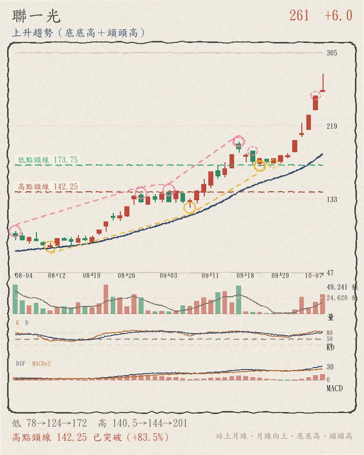
12:31 盤中 261（+2.35%），比加權指數強 2.37 個百分點、站上月線 180.225，已突破高點頸線 142.25，轉折結構仍是底底高＋頭頭高。
- 月線位置：現價 261 在月線 180.225 之上（+44.8%）；5 日線 217 也在月線之上（短均在上）；月線向上
- 量能：以已過交易時間推估，今天成交量約是 20 日均量的 2.81 倍（爆量），比 20 日均量大不少；上漲又量增，量價配合
- 關鍵價位：高點頸線 142.25 已站上；前一交易日高點 255（高於 2.4%）；今天盤中高點 280.5（低於 7.0%）；今天盤中低點 260（高於 0.4%）
- 轉折結構：低點 77.9、123.5、172.5 一路墊高、高點 140.5、144、201 也一路墊高，是底底高＋頭頭高；還沒確認的轉折低點 09-22 172.5、09-24 175；還沒確認的轉折高點 09-21 190、10-06 255（圖上虛線小圈）
智邦 2345 上市
2030 -20.0（-0.98%）
高點墊高、底部不穩 盤中成交值 83.37 億・全榜第 34 名（上市第 26 名）・相對大盤 -0.96
好條件 3/8：站上月線、頭頭高、突破頸線
不好條件 6/8：今日下跌、相對大盤弱、量增下跌（出貨）、貼近今日低點（1% 內）、跌破昨日低點、月線下彎
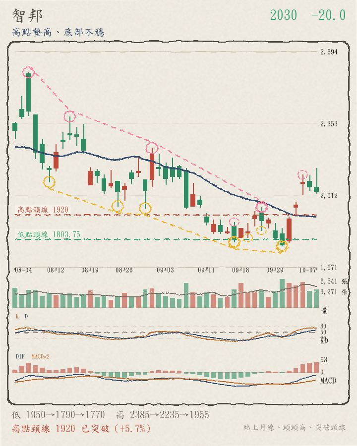
12:31 盤中 2030（-0.98%），比加權指數弱 0.96 個百分點、站上月線 1912.25，已突破高點頸線 1920，高點還在墊高（但底部沒同步墊高）。
- 月線位置：現價 2030 在月線 1912.25 之上（+6.2%）；5 日線 1953 也在月線之上（短均在上）；月線向下
- 量能：以已過交易時間推估，今天成交量約是 20 日均量的 1.39 倍（量增），比 20 日均量大不少；下跌卻量增，量價背離
- 關鍵價位：高點頸線 1920 已站上；前一交易日高點 2105（低於 3.6%）；今天盤中高點 2140（低於 5.1%）；今天盤中低點 2020（高於 0.5%）
- 轉折結構：高點 2385、2235、1955 墊高（頭頭高），但低點 1950、1790、1770 沒有同步墊高；還沒確認的轉折低點 09-23 1845、09-30 1770；還沒確認的轉折高點 09-23 1955、10-05 2110（圖上虛線小圈）
奇鋐 3017 上市
3550 -135.0（-3.66%）
高點墊高、底部不穩 盤中成交值 82.86 億・全榜第 35 名（上市第 27 名）・相對大盤 -3.64
好條件 3/8：站上月線、月線向上、頭頭高
不好條件 2/8：今日下跌、相對大盤弱
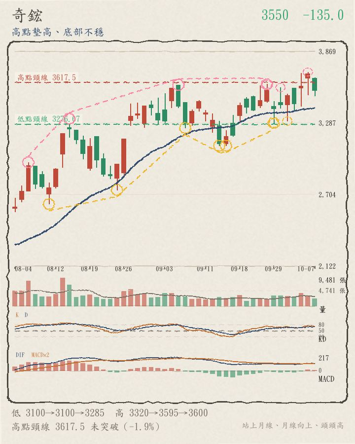
12:31 盤中 3550（-3.66%），比加權指數弱 3.64 個百分點、站上月線 3400.75，離高點頸線 3617.5 還差 1.9%，高點還在墊高（但底部沒同步墊高）。
- 月線位置：現價 3550 在月線 3400.75 之上（+4.4%）；5 日線 3531 也在月線之上（短均在上）；月線向上
- 量能：以已過交易時間推估，今天成交量約是 20 日均量的 1.04 倍（量平），跟 20 日均量差不多
- 關鍵價位：高點頸線 3617.5 還沒突破，差 1.9%；前一交易日高點 3700（低於 4.1%）；今天盤中高點 3655（低於 2.9%）；今天盤中低點 3505（高於 1.3%）
- 轉折結構：高點 3320、3595、3600 墊高（頭頭高），但低點 3100、3100、3285 沒有同步墊高；還沒確認的轉折低點 09-29 3285、10-01 3300；還沒確認的轉折高點 09-30 3575、10-06 3700（圖上虛線小圈）
台塑 1301 上市
75.4 +6.8（+9.91%）
高點墊高、底部不穩 盤中成交值 82.83 億・全榜第 36 名（上市第 28 名）・相對大盤 +9.93
好條件 6/8：站上月線、月線向上、頭頭高、突破頸線、相對大盤強、攻擊量（量增＋上漲）
不好條件 0/8：無
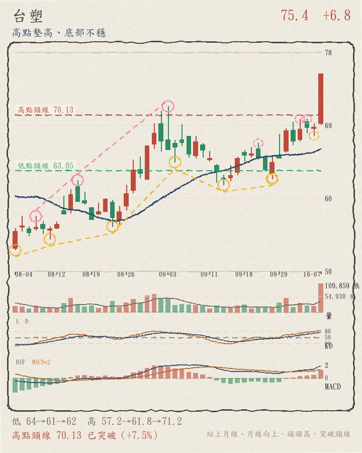
12:31 盤中 75.4（+9.91%），比加權指數強 9.93 個百分點、站上月線 65.37，已突破高點頸線 70.13，高點還在墊高（但底部沒同步墊高）。
- 月線位置：現價 75.4 在月線 65.37 之上（+15.3%）；5 日線 68.06 也在月線之上（短均在上）；月線向上
- 量能：以已過交易時間推估，今天成交量約是 20 日均量的 5.75 倍（爆量），比 20 日均量大不少；上漲又量增，量價配合
- 關鍵價位：高點頸線 70.13 已站上；前一交易日高點 69（高於 9.3%）；今天盤中高點 75.4（高於 0.0%）；今天盤中低點 68.9（高於 9.4%）
- 轉折結構：高點 57.2、61.8、71.2 墊高（頭頭高），但低點 64.1、61.2、62 沒有同步墊高；還沒確認的轉折低點 09-24 62、10-06 67.5；還沒確認的轉折高點 10-02 69.6、10-05 69.6（圖上虛線小圈）
合晶 6182 上櫃
134.5 +6.5（+5.08%）
高點墊高、底部不穩 盤中成交值 75.46 億・全榜第 37 名（上櫃第 9 名）・相對大盤 +5.10
好條件 5/8：站上月線、月線向上、頭頭高、相對大盤強、守住今日高檔（距今日高點 1% 內）
不好條件 0/8：無
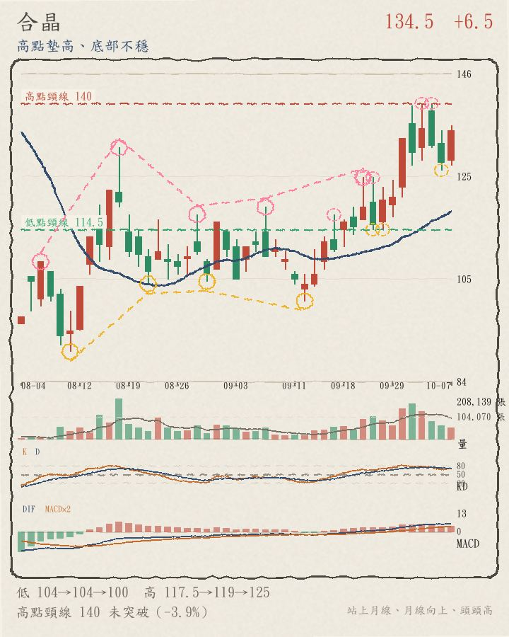
12:31 盤中 134.5（+5.08%），比加權指數強 5.10 個百分點、站上月線 117，離高點頸線 140 還差 3.9%，高點還在墊高（但底部沒同步墊高）。
- 月線位置：現價 134.5 在月線 117 之上（+15.0%）；5 日線 131.5 也在月線之上（短均在上）；月線向上
- 量能：以已過交易時間推估，今天成交量約是 20 日均量的 1.02 倍（量平），跟 20 日均量差不多
- 關鍵價位：高點頸線 140 還沒突破，差 3.9%；前一交易日高點 134.5（高於 0.0%）；今天盤中高點 135.5（低於 0.7%）；今天盤中低點 127.5（高於 5.5%）
- 轉折結構：高點 117.5、119、125 墊高（頭頭高），但低點 103.5、104、100 沒有同步墊高；還沒確認的轉折低點 09-24 114.5、10-06 126.5；還沒確認的轉折高點 10-02 140、10-05 140（圖上虛線小圈）
全新 2455 上市
565 -2.0（-0.35%）
高點墊高、底部不穩 盤中成交值 71.16 億・全榜第 38 名（上市第 29 名）・相對大盤 -0.33
好條件 3/8：站上月線、月線向上、頭頭高
不好條件 3/8：今日下跌、相對大盤弱、量增下跌（出貨）
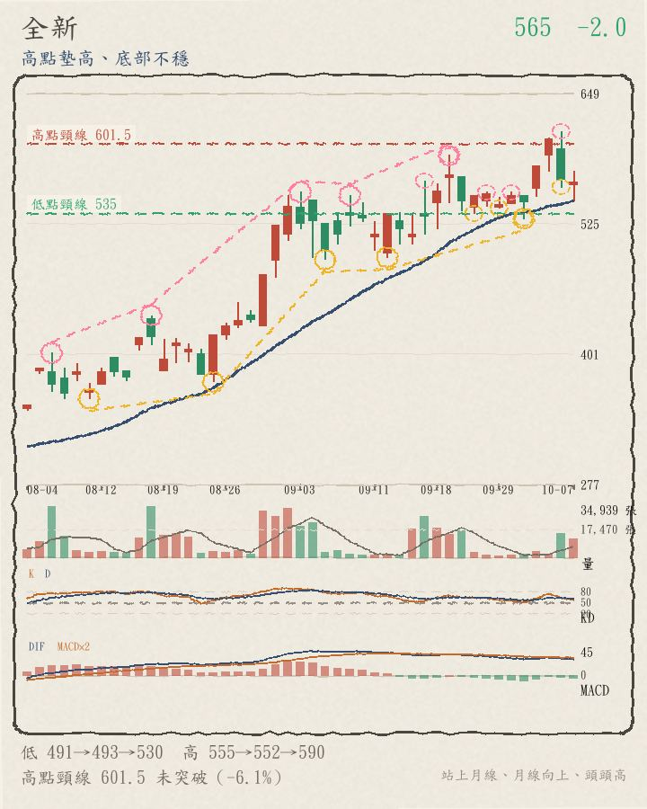
12:31 盤中 565（-0.35%），比加權指數弱 0.33 個百分點、站上月線 543.7，離高點頸線 601.5 還差 6.1%，高點還在墊高（但底部沒同步墊高）。
- 月線位置：現價 565 在月線 543.7 之上（+3.9%）；5 日線 570.2 也在月線之上（短均在上）；月線向上
- 量能：以已過交易時間推估，今天成交量約是 20 日均量的 2.05 倍（爆量），比 20 日均量大不少；下跌卻量增，量價背離
- 關鍵價位：高點頸線 601.5 還沒突破，差 6.1%；前一交易日高點 613（低於 7.8%）；今天盤中高點 575（低於 1.7%）；今天盤中低點 547（高於 3.3%）
- 轉折結構：高點 555、552、590 墊高（頭頭高），但低點 491、493、530 沒有同步墊高；還沒確認的轉折低點 10-01 530、10-06 560；還沒確認的轉折高點 09-30 555、10-06 613（圖上虛線小圈）
台玻 1802 上市
65.7 +5.9（+9.87%）
區間或轉弱 盤中成交值 68.91 億・全榜第 39 名（上市第 30 名）・相對大盤 +9.89
好條件 4/8：站上月線、突破頸線、相對大盤強、攻擊量（量增＋上漲）
不好條件 1/8：月線下彎
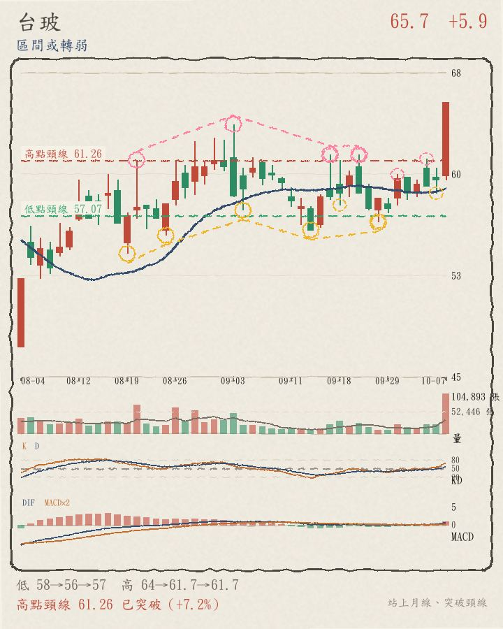
12:31 盤中 65.7（+9.87%），比加權指數強 9.89 個百分點、站上月線 58.9，已突破高點頸線 61.26，轉折還沒走出明顯方向。
- 月線位置：現價 65.7 在月線 58.9 之上（+11.5%）；5 日線 59.46 也在月線之上（短均在上）；月線向下
- 量能：以已過交易時間推估，今天成交量約是 20 日均量的 8.05 倍（爆量），比 20 日均量大不少；上漲又量增，量價配合
- 關鍵價位：高點頸線 61.26 已站上；前一交易日高點 60.7（高於 8.2%）；今天盤中高點 65.7（高於 0.0%）；今天盤中低點 59.8（高於 9.9%）
- 轉折結構：低點 57.5、56、56.6 與高點 64、61.7、61.7 都沒有明顯遞增，屬於區間震盪或轉弱；還沒確認的轉折低點 09-24 56.6、10-06 58.8；還沒確認的轉折高點 09-30 60.2、10-05 61.4（圖上虛線小圈）
貿聯-KY 3665 上市
2320 -5.0（-0.22%）
高點墊高、底部不穩 盤中成交值 68.42 億・全榜第 40 名（上市第 31 名）・相對大盤 -0.20
好條件 4/8：站上月線、月線向上、頭頭高、守住今日高檔（距今日高點 1% 內）
不好條件 2/8：今日下跌、相對大盤弱
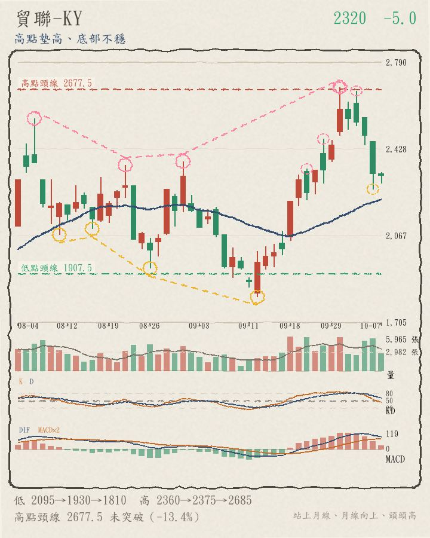
12:31 盤中 2320（-0.22%），比加權指數弱 0.20 個百分點、站上月線 2205.25，離高點頸線 2677.5 還差 13.4%，高點還在墊高（但底部沒同步墊高）。
- 月線位置：現價 2320 在月線 2205.25 之上（+5.2%）；5 日線 2500 也在月線之上（短均在上）；月線向上
- 量能：以已過交易時間推估，今天成交量約是 20 日均量的 1.14 倍（量增），比 20 日均量大一些；下跌卻量增，量價背離
- 關鍵價位：高點頸線 2677.5 還沒突破，差 13.4%；前一交易日高點 2460（低於 5.7%）；今天盤中高點 2330（低於 0.4%）；今天盤中低點 2285（高於 1.5%）
- 轉折結構：高點 2360、2375、2685 墊高（頭頭高），但低點 2095、1930、1810 沒有同步墊高；還沒確認的轉折低點 10-06 2260；還沒確認的轉折高點 09-30 2685、10-02 2670（圖上虛線小圈）
GIS-KY 6456 上市
104.5 +4.9（+4.92%）
高點墊高、底部不穩 盤中成交值 67.46 億・全榜第 41 名（上市第 32 名）・相對大盤 +4.94
好條件 6/8：站上月線、月線向上、頭頭高、突破頸線、相對大盤強、攻擊量（量增＋上漲）
不好條件 0/8：無
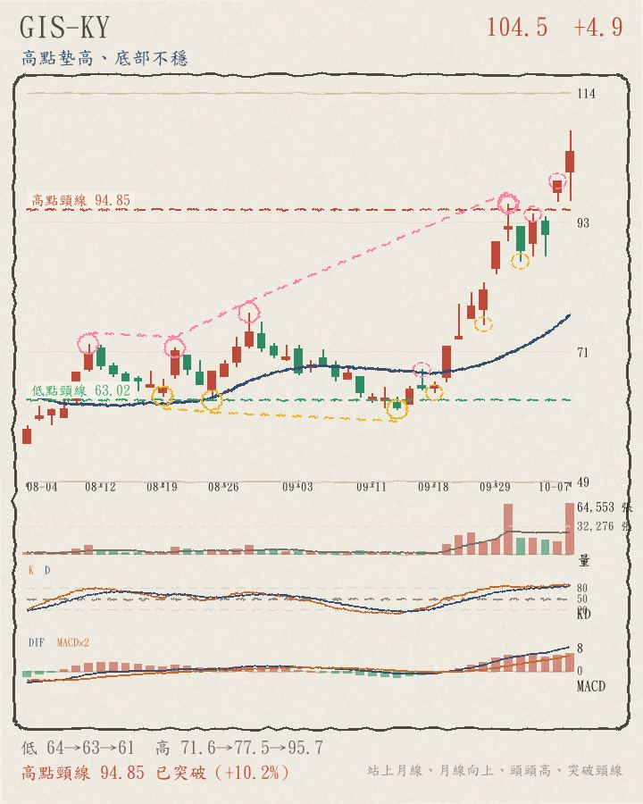
12:31 盤中 104.5（+4.92%），比加權指數強 4.94 個百分點、站上月線 75.43，已突破高點頸線 94.85，高點還在墊高（但底部沒同步墊高）。
- 月線位置：現價 104.5 在月線 75.43 之上（+38.5%）；5 日線 92.6 也在月線之上（短均在上）；月線向上
- 量能：以已過交易時間推估，今天成交量約是 20 日均量的 6.89 倍（爆量），比 20 日均量大不少；上漲又量增，量價配合
- 關鍵價位：高點頸線 94.85 已站上；前一交易日高點 99.6（高於 4.9%）；今天盤中高點 108（低於 3.2%）；今天盤中低點 96.3（高於 8.5%）
- 轉折結構：高點 71.6、77.5、95.7 墊高（頭頭高），但低點 63.6、62.9、61.4 沒有同步墊高；還沒確認的轉折低點 09-24 75.6、10-01 86.1；還沒確認的轉折高點 10-02 94、10-06 99.6（圖上虛線小圈）
鴻海 2317 上市
252 -4.0（-1.56%）
上升趨勢（底底高＋頭頭高） 盤中成交值 63.88 億・全榜第 42 名（上市第 33 名）・相對大盤 -1.54
好條件 5/8：站上月線、月線向上、底底高、頭頭高、守住今日高檔（距今日高點 1% 內）
不好條件 4/8：今日下跌、相對大盤弱、貼近今日低點（1% 內）、跌破昨日低點
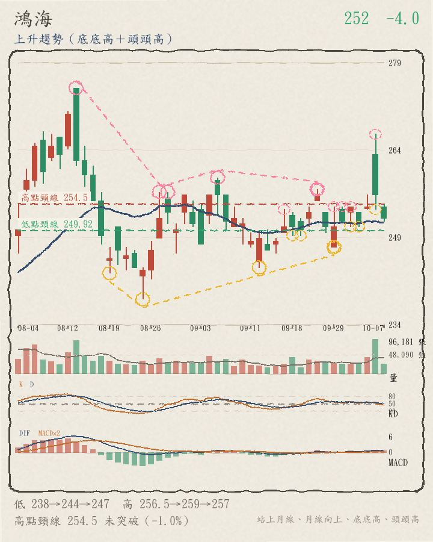
12:31 盤中 252（-1.56%），比加權指數弱 1.54 個百分點、站上月線 251.45，離高點頸線 254.5 還差 1.0%，轉折結構仍是底底高＋頭頭高。
- 月線位置：現價 252 在月線 251.45 之上（+0.2%）；5 日線 253.3 也在月線之上（短均在上）；月線向上
- 量能：以已過交易時間推估，今天成交量約是 20 日均量的 1.07 倍（量平），比 20 日均量大一些
- 關鍵價位：高點頸線 254.5 還沒突破，差 1.0%；前一交易日高點 266.5（低於 5.4%）；今天盤中高點 254.5（低於 1.0%）；今天盤中低點 251.5（高於 0.2%）
- 轉折結構：低點 238、243.5、247 一路墊高、高點 256.5、259、257 也一路墊高，是底底高＋頭頭高；還沒確認的轉折低點 10-02 250.5、10-06 253.5；還沒確認的轉折高點 10-01 254、10-06 266.5（圖上虛線小圈）
光聖 6442 上市
1815 +165.0（+10.00%）
區間或轉弱 盤中成交值 63.83 億・全榜第 43 名（上市第 34 名）・相對大盤 +10.02
好條件 4/8：站上月線、突破頸線、相對大盤強、攻擊量（量增＋上漲）
不好條件 1/8：月線下彎

12:31 盤中 1815（+10.00%），比加權指數強 10.02 個百分點、站上月線 1592.75，已突破高點頸線 1570，轉折還沒走出明顯方向。
- 月線位置：現價 1815 在月線 1592.75 之上（+13.9%）；5 日線 1590 也在月線之下（短均在下）；月線向下
- 量能：以已過交易時間推估，今天成交量約是 20 日均量的 2.12 倍（爆量），比 20 日均量大不少；上漲又量增，量價配合
- 關鍵價位：高點頸線 1570 已站上；前一交易日高點 1710（高於 6.1%）；今天盤中高點 1815（高於 0.0%）；今天盤中低點 1715（高於 5.8%）
- 轉折結構：低點 1560、1495、1465 與高點 1705、1695、1920 都沒有明顯遞增，屬於區間震盪或轉弱；還沒確認的轉折低點 09-24 1485、10-01 1465；還沒確認的轉折高點 09-29 1545、10-05 1755（圖上虛線小圈）
華星光 4979 上櫃
585 +17.0（+2.99%）
區間或轉弱 盤中成交值 59.54 億・全榜第 44 名（上櫃第 10 名）・相對大盤 +3.01
好條件 3/8：站上月線、相對大盤強、攻擊量（量增＋上漲）
不好條件 1/8：月線下彎
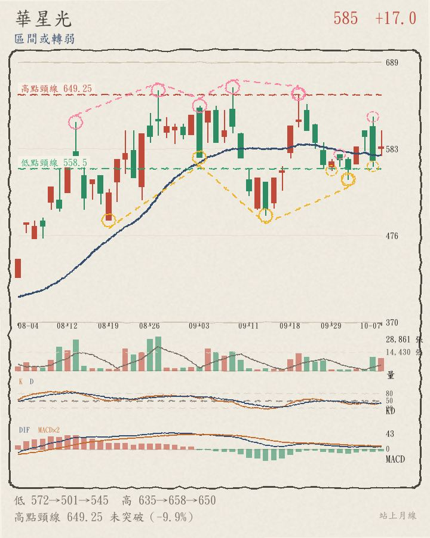
12:31 盤中 585（+2.99%），比加權指數強 3.01 個百分點、站上月線 574.85，離高點頸線 649.25 還差 9.9%，轉折還沒走出明顯方向。
- 月線位置：現價 585 在月線 574.85 之上（+1.8%）；5 日線 575.4 也在月線之上（短均在上）；月線向下
- 量能：以已過交易時間推估，今天成交量約是 20 日均量的 1.95 倍（爆量），比 20 日均量大不少；上漲又量增，量價配合
- 關鍵價位：高點頸線 649.25 還沒突破，差 9.9%；前一交易日高點 622（低於 5.9%）；今天盤中高點 605（低於 3.3%）；今天盤中低點 574（高於 1.9%）
- 轉折結構：低點 572、501、545 與高點 635、658、650 都沒有明顯遞增，屬於區間震盪或轉弱；還沒確認的轉折低點 10-01 545、10-06 561；還沒確認的轉折高點 09-30 576、10-06 622（圖上虛線小圈）
京元電子 2449 上市
300.5 +2.5（+0.84%）
高點墊高、底部不穩 盤中成交值 58.14 億・全榜第 45 名（上市第 35 名）・相對大盤 +0.86
好條件 5/8：站上月線、月線向上、頭頭高、突破頸線、相對大盤強
不好條件 0/8：無
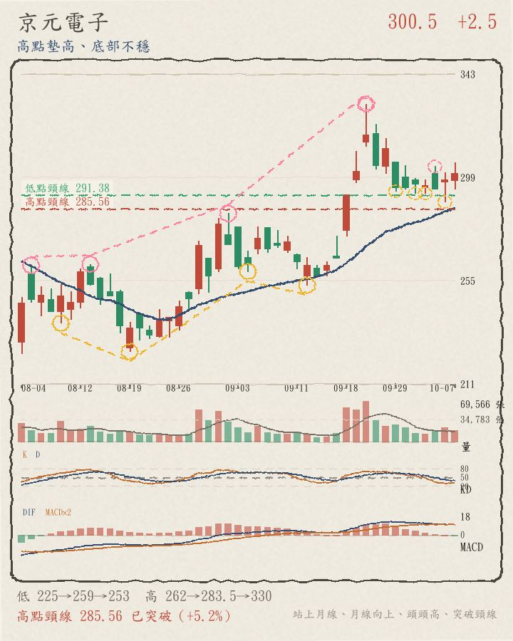
12:31 盤中 300.5（+0.84%），比加權指數強 0.86 個百分點、站上月線 284.425，已突破高點頸線 285.56，高點還在墊高（但底部沒同步墊高）。
- 月線位置：現價 300.5 在月線 284.425 之上（+5.7%）；5 日線 295.6 也在月線之上（短均在上）；月線向上
- 量能：以已過交易時間推估，今天成交量約是 20 日均量的 1.03 倍（量平），跟 20 日均量差不多
- 關鍵價位：高點頸線 285.56 已站上；前一交易日高點 301（低於 0.2%）；今天盤中高點 305（低於 1.5%）；今天盤中低點 294（高於 2.2%）
- 轉折結構：高點 262、283.5、330 墊高（頭頭高），但低點 225、259、253 沒有同步墊高；還沒確認的轉折低點 10-02 292、10-06 288.5；還沒確認的轉折高點 09-22 330、10-05 303.5（圖上虛線小圈）
玉晶光 3406 上市
1100 +55.0（+5.26%）
高點墊高、底部不穩 盤中成交值 55.07 億・全榜第 46 名（上市第 36 名）・相對大盤 +5.28
好條件 5/8：站上月線、頭頭高、突破頸線、相對大盤強、攻擊量（量增＋上漲）
不好條件 1/8：月線下彎
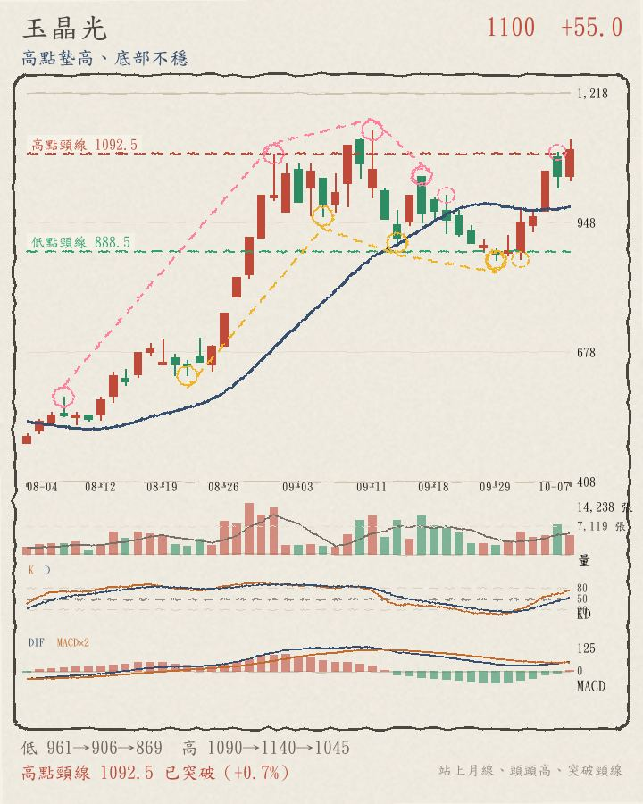
12:31 盤中 1100（+5.26%），比加權指數強 5.28 個百分點、站上月線 975.6，已突破高點頸線 1092.5，高點還在墊高（但底部沒同步墊高）。
- 月線位置：現價 1100 在月線 975.6 之上（+12.8%）；5 日線 980.2 也在月線之上（短均在上）；月線向下
- 量能：以已過交易時間推估，今天成交量約是 20 日均量的 1.17 倍（量增），比 20 日均量大不少；上漲又量增，量價配合
- 關鍵價位：高點頸線 1092.5 已站上；前一交易日高點 1095（高於 0.5%）；今天盤中高點 1120（低於 1.8%）；今天盤中低點 1035（高於 6.3%）
- 轉折結構：高點 1090、1140、1045 墊高（頭頭高），但低點 961、906、869 沒有同步墊高；還沒確認的轉折低點 09-29 869、10-01 871；還沒確認的轉折高點 09-21 1005、10-06 1095（圖上虛線小圈）
中美晶 5483 上櫃
223.5 +8.5（+3.95%）
高點墊高、底部不穩 盤中成交值 54.91 億・全榜第 47 名（上櫃第 11 名）・相對大盤 +3.97
好條件 6/8：站上月線、月線向上、頭頭高、突破頸線、相對大盤強、攻擊量（量增＋上漲）
不好條件 0/8：無
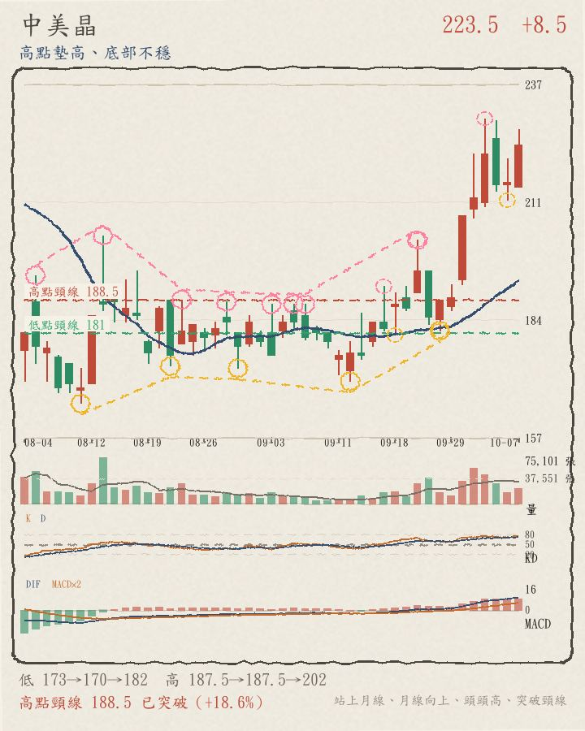
12:31 盤中 223.5（+3.95%），比加權指數強 3.97 個百分點、站上月線 190.925，已突破高點頸線 188.5，高點還在墊高（但底部沒同步墊高）。
- 月線位置：現價 223.5 在月線 190.925 之上（+17.1%）；5 日線 214 也在月線之上（短均在上）；月線向上
- 量能：以已過交易時間推估，今天成交量約是 20 日均量的 1.55 倍（爆量），比 20 日均量大不少；上漲又量增，量價配合
- 關鍵價位：高點頸線 188.5 已站上；前一交易日高點 220.5（高於 1.4%）；今天盤中高點 227（低於 1.5%）；今天盤中低點 214（高於 4.4%）
- 轉折結構：高點 187.5、187.5、202 墊高（頭頭高），但低點 173、170、181.5 沒有同步墊高；還沒確認的轉折低點 09-24 181.5、10-06 211；還沒確認的轉折高點 09-22 202、10-02 229.5（圖上虛線小圈）
聯鈞 3450 上市
539 +8.0（+1.51%）
上升趨勢（底底高＋頭頭高） 盤中成交值 52.47 億・全榜第 48 名（上市第 37 名）・相對大盤 +1.53
好條件 5/8：站上月線、底底高、頭頭高、相對大盤強、攻擊量（量增＋上漲）
不好條件 1/8：月線下彎
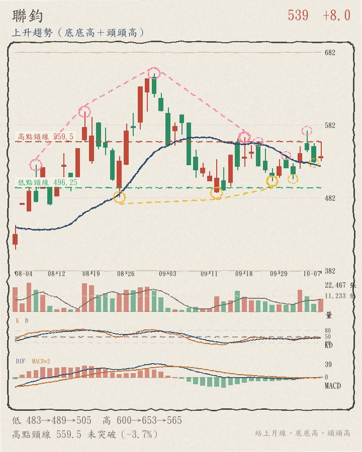
12:31 盤中 539（+1.51%），比加權指數強 1.53 個百分點、站上月線 528.075，離高點頸線 559.5 還差 3.7%，轉折結構仍是底底高＋頭頭高。
- 月線位置：現價 539 在月線 528.075 之上（+2.1%）；5 日線 532 也在月線之上（短均在上）；月線向下
- 量能：以已過交易時間推估，今天成交量約是 20 日均量的 1.76 倍（爆量），比 20 日均量大不少；上漲又量增，量價配合
- 關鍵價位：高點頸線 559.5 還沒突破，差 3.7%；前一交易日高點 557（低於 3.2%）；今天盤中高點 559（低於 3.6%）；今天盤中低點 533（高於 1.1%）
- 轉折結構：低點 483、489、505 一路墊高、高點 600、653、565 也一路墊高，是底底高＋頭頭高；還沒確認的轉折低點 10-01 508、10-06 530；還沒確認的轉折高點 09-30 540、10-05 574（圖上虛線小圈）
信驊 5274 上櫃
17795 -1190.0（-6.27%）
高點墊高、底部不穩 盤中成交值 51.61 億・全榜第 49 名（上櫃第 12 名）・相對大盤 -6.25
好條件 2/8：月線向上、頭頭高
不好條件 6/8：今日下跌、相對大盤弱、在月線之下、量增下跌（出貨）、貼近今日低點（1% 內）、跌破昨日低點
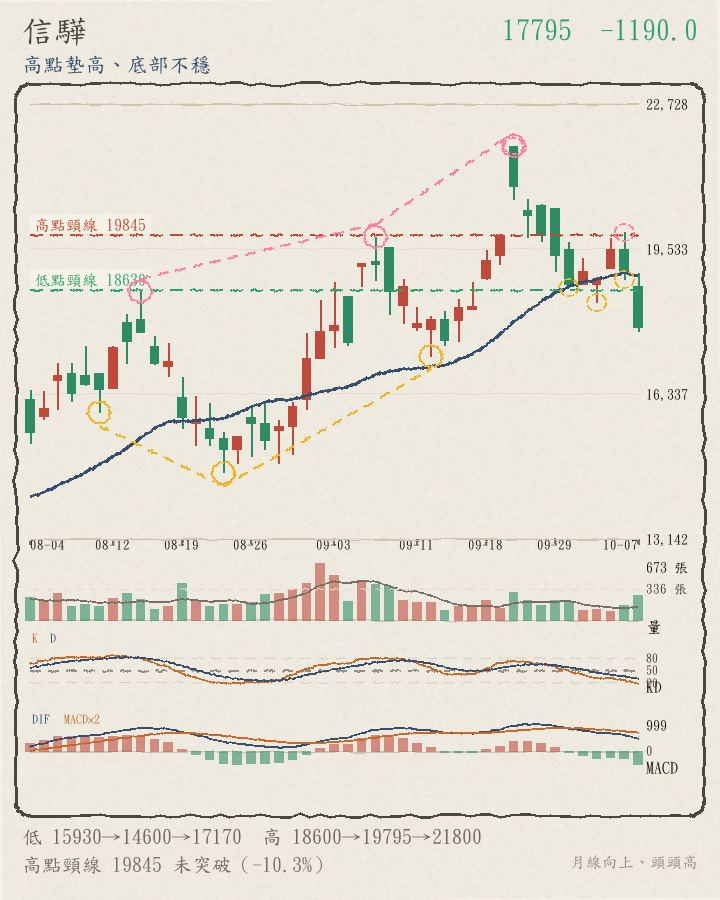
12:31 盤中 17795（-6.27%），比加權指數弱 6.25 個百分點、跌破月線 19015.5，離高點頸線 19845 還差 10.3%，高點還在墊高（但底部沒同步墊高）。
- 月線位置：現價 17795 在月線 19015.5 之下（-6.4%）；5 日線 19027 也在月線之上（短均在上）；月線向上
- 量能：以已過交易時間推估，今天成交量約是 20 日均量的 1.66 倍（爆量），比 20 日均量大不少；下跌卻量增，量價背離
- 關鍵價位：高點頸線 19845 還沒突破，差 10.3%；前一交易日高點 19895（低於 10.6%）；今天盤中高點 19000（低於 6.3%）；今天盤中低點 17710（高於 0.5%）
- 轉折結構：高點 18600、19795、21800 墊高（頭頭高），但低點 15930、14600、17170 沒有同步墊高；還沒確認的轉折低點 10-02 18355、10-06 18855；還沒確認的轉折高點 09-22 21800、10-06 19895（圖上虛線小圈）
健策 3653 上市
6795 -285.0（-4.03%）
高點墊高、底部不穩 盤中成交值 51.51 億・全榜第 50 名（上市第 38 名）・相對大盤 -4.01
好條件 3/8：站上月線、月線向上、頭頭高
不好條件 4/8：今日下跌、相對大盤弱、貼近今日低點（1% 內）、跌破昨日低點

12:31 盤中 6795（-4.03%），比加權指數弱 4.01 個百分點、站上月線 6118.75，離高點頸線 7300 還差 6.9%，高點還在墊高（但底部沒同步墊高）。
- 月線位置：現價 6795 在月線 6118.75 之上（+11.1%）；5 日線 6952 也在月線之上（短均在上）；月線向上
- 量能：以已過交易時間推估，今天成交量約是 20 日均量的 0.84 倍（量平），比 20 日均量少很多
- 關鍵價位：高點頸線 7300 還沒突破，差 6.9%；前一交易日高點 7280（低於 6.7%）；今天盤中高點 7020（低於 3.2%）；今天盤中低點 6760（高於 0.5%）
- 轉折結構：高點 6000、5920、7160 墊高（頭頭高），但低點 4910、5480、5210 沒有同步墊高；還沒確認的轉折低點 10-01 6665、10-05 6760；還沒確認的轉折高點 09-29 7160、10-05 7440（圖上虛線小圈）
台勝科 3532 上市
513 +46.0（+9.85%）
上升趨勢（底底高＋頭頭高） 盤中成交值 49.07 億・全榜第 51 名（上市第 39 名）・相對大盤 +9.87
好條件 7/8：站上月線、月線向上、底底高、頭頭高、突破頸線、相對大盤強、攻擊量（量增＋上漲）
不好條件 0/8：無
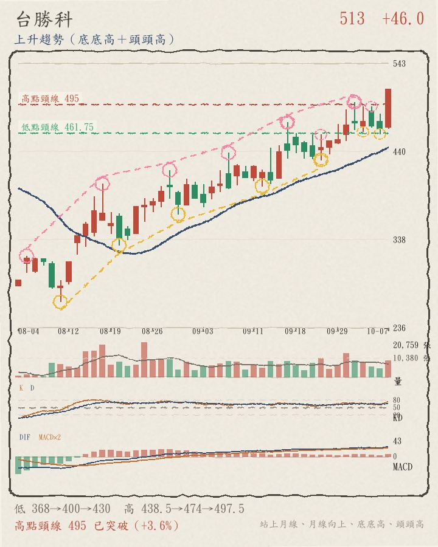
12:31 盤中 513（+9.85%），比加權指數強 9.87 個百分點、站上月線 439.65，已突破高點頸線 495，轉折結構仍是底底高＋頭頭高。
- 月線位置：現價 513 在月線 439.65 之上（+16.7%）；5 日線 471.4 也在月線之上（短均在上）；月線向上
- 量能：以已過交易時間推估，今天成交量約是 20 日均量的 1.57 倍（爆量），比 20 日均量大不少；上漲又量增，量價配合
- 關鍵價位：高點頸線 495 已站上；前一交易日高點 484（高於 6.0%）；今天盤中高點 513（高於 0.0%）；今天盤中低點 467（高於 9.9%）
- 轉折結構：低點 367.5、400、430.5 一路墊高、高點 438.5、474、497.5 也一路墊高，是底底高＋頭頭高；還沒確認的轉折低點 10-02 463、10-06 460.5；還沒確認的轉折高點 10-01 497.5、10-05 492.5（圖上虛線小圈）
光頡 3624 上櫃
159.5 +14.5（+10.00%）
上升趨勢（底底高＋頭頭高） 盤中成交值 46.74 億・全榜第 52 名（上櫃第 13 名）・相對大盤 +10.02
好條件 7/8：站上月線、月線向上、底底高、頭頭高、突破頸線、相對大盤強、攻擊量（量增＋上漲）
不好條件 0/8：無
12:31 盤中 159.5（+10.00%），比加權指數強 10.02 個百分點、站上月線 127.275，已突破高點頸線 99.15，轉折結構仍是底底高＋頭頭高。
- 月線位置：現價 159.5 在月線 127.275 之上（+25.3%）；5 日線 145.5 也在月線之上（短均在上）；月線向上
- 量能：以已過交易時間推估，今天成交量約是 20 日均量的 1.39 倍（量增），比 20 日均量大不少；上漲又量增，量價配合
- 關鍵價位：高點頸線 99.15 已站上；前一交易日高點 153（高於 4.2%）；今天盤中高點 159.5（高於 0.0%）；今天盤中低點 153（高於 4.2%）
- 轉折結構：低點 81.8、84.8、115 一路墊高、高點 163、99.4、98.9 也一路墊高，是底底高＋頭頭高；還沒確認的轉折低點 09-30 134、10-06 144；還沒確認的轉折高點 09-24 144.5、10-02 157.5（圖上虛線小圈）
緯穎 6669 上市
2250 -40.0（-1.75%）
高點墊高、底部不穩 盤中成交值 44.51 億・全榜第 53 名（上市第 40 名）・相對大盤 -1.73
好條件 2/8：站上月線、頭頭高
不好條件 4/8：今日下跌、相對大盤弱、貼近今日低點（1% 內）、月線下彎
12:31 盤中 2250（-1.75%），比加權指數弱 1.73 個百分點、站上月線 2207.25，離高點頸線 2297.31 還差 2.1%，高點還在墊高（但底部沒同步墊高）。
- 月線位置：現價 2250 在月線 2207.25 之上（+1.9%）；5 日線 2145 也在月線之下（短均在下）；月線向下
- 量能：以已過交易時間推估，今天成交量約是 20 日均量的 0.81 倍（量平），比 20 日均量少很多
- 關鍵價位：高點頸線 2297.31 還沒突破，差 2.1%；前一交易日高點 2335（低於 3.6%）；今天盤中高點 2310（低於 2.6%）；今天盤中低點 2235（高於 0.7%）
- 轉折結構：高點 2145.64、2259.63、2875 墊高（頭頭高），但低點 2053.44、2085、2075 沒有同步墊高；還沒確認的轉折低點 09-24 2075、10-02 2080；還沒確認的轉折高點 09-30 2145、10-06 2335（圖上虛線小圈）
台表科 6278 上市
247.5 +13.5（+5.77%）
上升趨勢（底底高＋頭頭高） 盤中成交值 43.55 億・全榜第 54 名（上市第 41 名）・相對大盤 +5.79
好條件 7/8：站上月線、月線向上、底底高、頭頭高、突破頸線、相對大盤強、攻擊量（量增＋上漲）
不好條件 0/8：無
12:31 盤中 247.5（+5.77%），比加權指數強 5.79 個百分點、站上月線 201.725，已突破高點頸線 214，轉折結構仍是底底高＋頭頭高。
- 月線位置：現價 247.5 在月線 201.725 之上（+22.7%）；5 日線 221.1 也在月線之上（短均在上）；月線向上
- 量能：以已過交易時間推估，今天成交量約是 20 日均量的 3.98 倍（爆量），比 20 日均量大不少；上漲又量增，量價配合
- 關鍵價位：高點頸線 214 已站上；前一交易日高點 237.5（高於 4.2%）；今天盤中高點 250.5（低於 1.2%）；今天盤中低點 227（高於 9.0%）
- 轉折結構：低點 168、172、179.5 一路墊高、高點 181.5、210、223 也一路墊高，是底底高＋頭頭高；還沒確認的轉折低點 09-24 204.5、10-05 211.5；還沒確認的轉折高點 09-30 223、10-06 237.5（圖上虛線小圈）
技嘉 2376 上市
365.5 -14.5（-3.82%）
高點墊高、底部不穩 盤中成交值 41.71 億・全榜第 55 名（上市第 42 名）・相對大盤 -3.80
好條件 3/8：站上月線、月線向上、頭頭高
不好條件 4/8：今日下跌、相對大盤弱、量增下跌（出貨）、跌破昨日低點

12:31 盤中 365.5（-3.82%），比加權指數弱 3.80 個百分點、站上月線 360.575，離高點頸線 399.25 還差 8.5%，高點還在墊高（但底部沒同步墊高）。
- 月線位置：現價 365.5 在月線 360.575 之上（+1.4%）；5 日線 373.8 也在月線之上（短均在上）；月線向上
- 量能：以已過交易時間推估，今天成交量約是 20 日均量的 2.63 倍（爆量），比 20 日均量大不少；下跌卻量增，量價背離
- 關鍵價位：高點頸線 399.25 還沒突破，差 8.5%；前一交易日高點 396.5（低於 7.8%）；今天盤中高點 375.5（低於 2.7%）；今天盤中低點 361（高於 1.2%）
- 轉折結構：高點 402、371、376 墊高（頭頭高），但低點 341、358.5、358.5 沒有同步墊高；還沒確認的轉折低點 09-30 358.5、10-01 358.5；還沒確認的轉折高點 09-29 370、10-06 396.5（圖上虛線小圈）
宏致 3605 上市
164 -8.0（-4.65%）
底部墊高、未過前高 盤中成交值 41.55 億・全榜第 56 名（上市第 43 名）・相對大盤 -4.63
好條件 3/8：站上月線、月線向上、底底高
不好條件 4/8：今日下跌、相對大盤弱、量增下跌（出貨）、貼近今日低點（1% 內）
12:31 盤中 164（-4.65%），比加權指數弱 4.63 個百分點、站上月線 152.9，離高點頸線 187 還差 12.3%，底部還在墊高（但高點沒同步創高）。
- 月線位置：現價 164 在月線 152.9 之上（+7.3%）；5 日線 171.8 也在月線之上（短均在上）；月線向上
- 量能：以已過交易時間推估，今天成交量約是 20 日均量的 1.62 倍（爆量），比 20 日均量大不少；下跌卻量增，量價背離
- 關鍵價位：高點頸線 187 還沒突破，差 12.3%；前一交易日高點 173（低於 5.2%）；今天盤中高點 185（低於 11.4%）；今天盤中低點 163（高於 0.6%）
- 轉折結構：低點 106.5、113.5、118 墊高（底底高），但高點 141、134.5、190.5 沒有同步創高；還沒確認的轉折低點 10-01 168.5、10-06 160；還沒確認的轉折高點 10-02 182、10-06 173（圖上虛線小圈）
台化 1326 上市
76.1 +3.1（+4.25%）
高點墊高、底部不穩 盤中成交值 39.79 億・全榜第 57 名（上市第 44 名）・相對大盤 +4.27
好條件 5/8：站上月線、頭頭高、突破頸線、相對大盤強、攻擊量（量增＋上漲）
不好條件 1/8：月線下彎
12:31 盤中 76.1（+4.25%），比加權指數強 4.27 個百分點、站上月線 68.98，已突破高點頸線 69.93，高點還在墊高（但底部沒同步墊高）。
- 月線位置：現價 76.1 在月線 68.98 之上（+10.3%）；5 日線 70.74 也在月線之上（短均在上）；月線向下
- 量能：以已過交易時間推估，今天成交量約是 20 日均量的 2.48 倍（爆量），比 20 日均量大不少；上漲又量增，量價配合
- 關鍵價位：高點頸線 69.93 已站上；前一交易日高點 73.4（高於 3.7%）；今天盤中高點 77.1（低於 1.3%）；今天盤中低點 72.3（高於 5.3%）
- 轉折結構：高點 61.7、78.2、69.2 墊高（頭頭高），但低點 56.1、64.9、63.8 沒有同步墊高；還沒確認的轉折低點 10-01 67.5、10-06 70.8；還沒確認的轉折高點 09-29 71.4、10-06 73.4（圖上虛線小圈）
環宇-KY 4991 上櫃
520 +15.0（+2.97%）
高點墊高、底部不穩 盤中成交值 38.49 億・全榜第 58 名（上櫃第 14 名）・相對大盤 +2.99
好條件 4/8：站上月線、頭頭高、相對大盤強、攻擊量（量增＋上漲）
不好條件 2/8：貼近今日低點（1% 內）、月線下彎
12:31 盤中 520（+2.97%），比加權指數強 2.99 個百分點、站上月線 475.575，離高點頸線 553.5 還差 6.1%，高點還在墊高（但底部沒同步墊高）。
- 月線位置：現價 520 在月線 475.575 之上（+9.3%）；5 日線 507.3 也在月線之上（短均在上）；月線向下
- 量能：以已過交易時間推估，今天成交量約是 20 日均量的 2.35 倍（爆量），比 20 日均量大不少；上漲又量增，量價配合
- 關鍵價位：高點頸線 553.5 還沒突破，差 6.1%；前一交易日高點 535（低於 2.8%）；今天盤中高點 552（低於 5.8%）；今天盤中低點 517（高於 0.6%）
- 轉折結構：高點 560、520、508 墊高（頭頭高），但低點 418.5、417、436 沒有同步墊高；還沒確認的轉折低點 09-24 436、10-06 503；還沒確認的轉折高點 09-30 498、10-05 547（圖上虛線小圈）
日月光投控 3711 上市
731 -13.0（-1.75%）
上升趨勢（底底高＋頭頭高） 盤中成交值 38.08 億・全榜第 59 名（上市第 45 名）・相對大盤 -1.73
好條件 5/8：站上月線、月線向上、底底高、頭頭高、突破頸線
不好條件 4/8：今日下跌、相對大盤弱、貼近今日低點（1% 內）、跌破昨日低點
12:31 盤中 731（-1.75%），比加權指數弱 1.73 個百分點、站上月線 662.75，已突破高點頸線 715，轉折結構仍是底底高＋頭頭高。
- 月線位置：現價 731 在月線 662.75 之上（+10.3%）；5 日線 722.4 也在月線之上（短均在上）；月線向上
- 量能：以已過交易時間推估，今天成交量約是 20 日均量的 0.43 倍（量縮），比 20 日均量少很多
- 關鍵價位：高點頸線 715 已站上；前一交易日高點 755（低於 3.2%）；今天盤中高點 748（低於 2.3%）；今天盤中低點 729（高於 0.3%）
- 轉折結構：低點 578、592、678 一路墊高、高點 630、653、711 也一路墊高，是底底高＋頭頭高；還沒確認的轉折低點 09-29 678、10-01 693；還沒確認的轉折高點 09-30 723、10-05 758（圖上虛線小圈）
光寶科 2301 上市
300.5 +1.5（+0.50%）
高點墊高、底部不穩 盤中成交值 36.17 億・全榜第 60 名（上市第 46 名）・相對大盤 +0.52
好條件 3/8：站上月線、頭頭高、相對大盤強
不好條件 1/8：月線下彎
12:31 盤中 300.5（+0.50%），比加權指數強 0.52 個百分點、站上月線 285.3，離高點頸線 301.25 還差 0.2%，高點還在墊高（但底部沒同步墊高）。
- 月線位置：現價 300.5 在月線 285.3 之上（+5.3%）；5 日線 288.5 也在月線之上（短均在上）；月線向下
- 量能：以已過交易時間推估，今天成交量約是 20 日均量的 0.94 倍（量平），比 20 日均量少一些
- 關鍵價位：高點頸線 301.25 還沒突破，差 0.2%；前一交易日高點 303（低於 0.8%）；今天盤中高點 304.5（低於 1.3%）；今天盤中低點 295（高於 1.9%）
- 轉折結構：高點 286.5、328、299.5 墊高（頭頭高），但低點 271、278、278 沒有同步墊高；還沒確認的轉折低點 09-24 278、10-01 278；還沒確認的轉折高點 10-01 285、10-06 303（圖上虛線小圈）
新唐 4919 上市
160 +9.5（+6.31%）
高點墊高、底部不穩 盤中成交值 35.32 億・全榜第 61 名（上市第 47 名）・相對大盤 +6.33
好條件 6/8：站上月線、月線向上、頭頭高、突破頸線、相對大盤強、攻擊量（量增＋上漲）
不好條件 0/8：無
12:31 盤中 160（+6.31%），比加權指數強 6.33 個百分點、站上月線 129.7，已突破高點頸線 125.75，高點還在墊高（但底部沒同步墊高）。
- 月線位置：現價 160 在月線 129.7 之上（+23.4%）；5 日線 151.9 也在月線之上（短均在上）；月線向上
- 量能：以已過交易時間推估，今天成交量約是 20 日均量的 2.08 倍（爆量），比 20 日均量大不少；上漲又量增，量價配合
- 關鍵價位：高點頸線 125.75 已站上；前一交易日高點 157（高於 1.9%）；今天盤中高點 164（低於 2.4%）；今天盤中低點 150（高於 6.7%）
- 轉折結構：高點 126.5、125、144 墊高（頭頭高），但低點 111、115、109 沒有同步墊高；還沒確認的轉折低點 09-24 130、10-06 149.5；還沒確認的轉折高點 09-23 144、10-02 167（圖上虛線小圈）
力積電 6770 上市
73.5 -0.8（-1.08%）
高點墊高、底部不穩 盤中成交值 35.3 億・全榜第 62 名（上市第 48 名）・相對大盤 -1.06
好條件 3/8：站上月線、月線向上、頭頭高
不好條件 4/8：今日下跌、相對大盤弱、貼近今日低點（1% 內）、跌破昨日低點
12:31 盤中 73.5（-1.08%），比加權指數弱 1.06 個百分點、站上月線 72.645，離高點頸線 74.4 還差 1.2%，高點還在墊高（但底部沒同步墊高）。
- 月線位置：現價 73.5 在月線 72.645 之上（+1.2%）；5 日線 75.28 也在月線之上（短均在上）；月線向上
- 量能：以已過交易時間推估，今天成交量約是 20 日均量的 0.49 倍（量縮），比 20 日均量少很多
- 關鍵價位：高點頸線 74.4 還沒突破，差 1.2%；前一交易日高點 76（低於 3.3%）；今天盤中高點 74.8（低於 1.7%）；今天盤中低點 73.1（高於 0.5%）
- 轉折結構：高點 73.7、75.3、74.7 墊高（頭頭高），但低點 67、66.7、70.5 沒有同步墊高；還沒確認的轉折低點 10-01 73.3、10-06 74.2；還沒確認的轉折高點 09-30 75.4、10-05 78.1（圖上虛線小圈）
緯創 3231 上市
185.5 -4.0（-2.11%）
高點墊高、底部不穩 盤中成交值 35.21 億・全榜第 63 名（上市第 49 名）・相對大盤 -2.09
好條件 2/8：月線向上、頭頭高
不好條件 5/8：今日下跌、相對大盤弱、在月線之下、貼近今日低點（1% 內）、跌破昨日低點
12:31 盤中 185.5（-2.11%），比加權指數弱 2.09 個百分點、跌破月線 186，離高點頸線 191.12 還差 2.9%，高點還在墊高（但底部沒同步墊高）。
- 月線位置：現價 185.5 在月線 186 之下（-0.3%）；5 日線 188.1 也在月線之上（短均在上）；月線向上
- 量能：以已過交易時間推估，今天成交量約是 20 日均量的 0.51 倍（量縮），比 20 日均量少很多
- 關鍵價位：高點頸線 191.12 還沒突破，差 2.9%；前一交易日高點 194.5（低於 4.6%）；今天盤中高點 189.5（低於 2.1%）；今天盤中低點 185（高於 0.3%）
- 轉折結構：高點 188、200.5、190.5 墊高（頭頭高），但低點 174、179.5、178 沒有同步墊高；還沒確認的轉折低點 09-24 178；還沒確認的轉折高點 10-01 191.5、10-06 194.5（圖上虛線小圈）
前鼎 4908 上櫃
254 +23.0（+9.96%）
區間或轉弱 盤中成交值 34.89 億・全榜第 64 名（上櫃第 15 名）・相對大盤 +9.98
好條件 5/8：站上月線、月線向上、突破頸線、相對大盤強、攻擊量（量增＋上漲）
不好條件 0/8：無
12:31 盤中 254（+9.96%），比加權指數強 9.98 個百分點、站上月線 226.6，已突破高點頸線 241.75，轉折還沒走出明顯方向。
- 月線位置：現價 254 在月線 226.6 之上（+12.1%）；5 日線 220.3 也在月線之下（短均在下）；月線向上
- 量能：以已過交易時間推估，今天成交量約是 20 日均量的 3.54 倍（爆量），比 20 日均量大不少；上漲又量增，量價配合
- 關鍵價位：高點頸線 241.75 已站上；前一交易日高點 237（高於 7.2%）；今天盤中高點 254（高於 0.0%）；今天盤中低點 238（高於 6.7%）
- 轉折結構：低點 199、218、204 與高點 241.5、265、262 都沒有明顯遞增，屬於區間震盪或轉弱；還沒確認的轉折低點 10-01 204、10-06 225；還沒確認的轉折高點 09-30 212、10-05 242（圖上虛線小圈）
力成 6239 上市
304.5 -6.0（-1.93%）
高點墊高、底部不穩 盤中成交值 34.12 億・全榜第 65 名（上市第 50 名）・相對大盤 -1.91
好條件 3/8：站上月線、月線向上、頭頭高
不好條件 3/8：今日下跌、相對大盤弱、貼近今日低點（1% 內）
12:31 盤中 304.5（-1.93%），比加權指數弱 1.91 個百分點、站上月線 285.125，離高點頸線 314 還差 3.0%，高點還在墊高（但底部沒同步墊高）。
- 月線位置：現價 304.5 在月線 285.125 之上（+6.8%）；5 日線 299.6 也在月線之上（短均在上）；月線向上
- 量能：以已過交易時間推估，今天成交量約是 20 日均量的 1.08 倍（量平），比 20 日均量大一些
- 關鍵價位：高點頸線 314 還沒突破，差 3.0%；前一交易日高點 312（低於 2.4%）；今天盤中高點 313（低於 2.7%）；今天盤中低點 304（高於 0.2%）
- 轉折結構：高點 298、290.5、302 墊高（頭頭高），但低點 272.5、262、279.5 沒有同步墊高；還沒確認的轉折低點 09-29 279.5；還沒確認的轉折高點 10-02 316、10-06 312（圖上虛線小圈）
旺矽 6223 上櫃
5520 -150.0（-2.65%）
區間或轉弱 盤中成交值 33.95 億・全榜第 66 名（上櫃第 16 名）・相對大盤 -2.63
好條件 2/8：站上月線、月線向上
不好條件 3/8：今日下跌、相對大盤弱、貼近今日低點（1% 內）
12:31 盤中 5520（-2.65%），比加權指數弱 2.63 個百分點、站上月線 5489.5，離高點頸線 5645 還差 2.2%，轉折還沒走出明顯方向。
- 月線位置：現價 5520 在月線 5489.5 之上（+0.6%）；5 日線 5331 也在月線之下（短均在下）；月線向上
- 量能：以已過交易時間推估，今天成交量約是 20 日均量的 0.87 倍（量平），比 20 日均量少一些
- 關鍵價位：高點頸線 5645 還沒突破，差 2.2%；前一交易日高點 5725（低於 3.6%）；今天盤中高點 5725（低於 3.6%）；今天盤中低點 5490（高於 0.5%）
- 轉折結構：低點 5365、5090、4995 與高點 5585、6060、5860 都沒有明顯遞增，屬於區間震盪或轉弱；還沒確認的轉折低點 09-22 5090、10-01 4995；還沒確認的轉折高點 09-24 5625、10-06 5725（圖上虛線小圈）
精材 3374 上櫃
493 +5.5（+1.13%）
上升趨勢（底底高＋頭頭高） 盤中成交值 30.87 億・全榜第 67 名（上櫃第 17 名）・相對大盤 +1.15
好條件 6/8：站上月線、月線向上、底底高、頭頭高、突破頸線、相對大盤強
不好條件 0/8：無
12:31 盤中 493（+1.13%），比加權指數強 1.15 個百分點、站上月線 459，已突破高點頸線 491.5，轉折結構仍是底底高＋頭頭高。
- 月線位置：現價 493 在月線 459 之上（+7.4%）；5 日線 472.8 也在月線之上（短均在上）；月線向上
- 量能：以已過交易時間推估，今天成交量約是 20 日均量的 0.97 倍（量平），跟 20 日均量差不多
- 關鍵價位：高點頸線 491.5 已站上；前一交易日高點 530（低於 7.0%）；今天盤中高點 499.5（低於 1.3%）；今天盤中低點 475.5（高於 3.7%）
- 轉折結構：低點 289、407、436.5 一路墊高、高點 431、496、487 也一路墊高，是底底高＋頭頭高；還沒確認的轉折低點 09-29 436.5、10-01 450；還沒確認的轉折高點 09-30 462、10-06 530（圖上虛線小圈）
欣銓 3264 上櫃
250 +4.0（+1.63%）
高點墊高、底部不穩 盤中成交值 29.55 億・全榜第 68 名（上櫃第 18 名）・相對大盤 +1.65
好條件 5/8：站上月線、月線向上、頭頭高、突破頸線、相對大盤強
不好條件 0/8：無
12:31 盤中 250（+1.63%），比加權指數強 1.65 個百分點、站上月線 243.075，已突破高點頸線 243.38，高點還在墊高（但底部沒同步墊高）。
- 月線位置：現價 250 在月線 243.075 之上（+2.9%）；5 日線 244.3 也在月線之上（短均在上）；月線向上
- 量能：以已過交易時間推估，今天成交量約是 20 日均量的 1.08 倍（量平），比 20 日均量大一些
- 關鍵價位：高點頸線 243.38 已站上；前一交易日高點 248（高於 0.8%）；今天盤中高點 253（低於 1.2%）；今天盤中低點 243.5（高於 2.7%）
- 轉折結構：高點 239.5、251.5、289.5 墊高（頭頭高），但低點 220、238、238 沒有同步墊高；還沒確認的轉折低點 09-30 238、10-05 239.5；還沒確認的轉折高點 09-30 247、10-05 249（圖上虛線小圈）
世界 5347 上櫃
190 -1.0（-0.52%）
高點墊高、底部不穩 盤中成交值 28.49 億・全榜第 69 名（上櫃第 19 名）・相對大盤 -0.50
好條件 4/8：站上月線、月線向上、頭頭高、突破頸線
不好條件 2/8：今日下跌、相對大盤弱
12:31 盤中 190（-0.52%），比加權指數弱 0.50 個百分點、站上月線 169.325，已突破高點頸線 185，高點還在墊高（但底部沒同步墊高）。
- 月線位置：現價 190 在月線 169.325 之上（+12.2%）；5 日線 185.5 也在月線之上（短均在上）；月線向上
- 量能：以已過交易時間推估，今天成交量約是 20 日均量的 1.13 倍（量增），比 20 日均量大一些；下跌卻量增，量價背離
- 關鍵價位：高點頸線 185 已站上；前一交易日高點 195（低於 2.6%）；今天盤中高點 194.5（低於 2.3%）；今天盤中低點 187.5（高於 1.3%）
- 轉折結構：高點 157、158、163 墊高（頭頭高），但低點 146.5、147、152.5 沒有同步墊高；還沒確認的轉折低點 09-24 168、10-01 178.5；還沒確認的轉折高點 10-01 188.5、10-06 195（圖上虛線小圈）
萬潤 6187 上櫃
1525 -10.0（-0.65%）
高點墊高、底部不穩 盤中成交值 28.24 億・全榜第 70 名（上櫃第 20 名）・相對大盤 -0.63
好條件 4/8：站上月線、月線向上、頭頭高、突破頸線
不好條件 3/8：今日下跌、相對大盤弱、貼近今日低點（1% 內）
12:31 盤中 1525（-0.65%），比加權指數弱 0.63 個百分點、站上月線 1293，已突破高點頸線 1436.67，高點還在墊高（但底部沒同步墊高）。
- 月線位置：現價 1525 在月線 1293 之上（+17.9%）；5 日線 1393 也在月線之上（短均在上）；月線向上
- 量能：以已過交易時間推估，今天成交量約是 20 日均量的 1.13 倍（量增），比 20 日均量大一些；下跌卻量增，量價背離
- 關鍵價位：高點頸線 1436.67 已站上；前一交易日高點 1590（低於 4.1%）；今天盤中高點 1570（低於 2.9%）；今天盤中低點 1510（高於 1.0%）
- 轉折結構：高點 1455、1435、1270 墊高（頭頭高），但低點 1185、1180、1180 沒有同步墊高；還沒確認的轉折低點 09-24 1180、10-01 1260；還沒確認的轉折高點 09-30 1420、10-06 1590（圖上虛線小圈）